Lucas Keith (lsk86) and Chris Parker (dcp243)
This project models & visualizes behavior of the Lobster Stomatogastric Ganglion Pyloric central pattern generator on a FPGA using the Izekevich Neuronal Model.
We implemented the pyloric circuit of the stomatogastric ganglion as six coupled Izhikevich neurons in Verilog on the Cyclone V FPGA, with a Linux application on the ARM processor that plots membrane voltage over time and phase portraits on VGA. Our goal was twofold: implement a hardware efficient neuron model to produce biologically realistic rhythmic motor output in real time, and enable interactive exploration of network dynamics through parameter changes, integration step adjustment, and injected current mirroring neuromodulation experiments such as serotonin stimulation.
Our team was interested in neuroscience and brain–computer interfaces, particularly because FPGAs are well suited for fast, parallel, low-latency computation in these domains. Initially, we aimed to model a system resembling a human neural network. However, after discussions with Professor Bruce Land, we shifted our focus toward smaller, well-characterized neural circuits in other animals that could realistically capture meaningful behavior within the resource constraints of the FPGA.
He directed us to crustacean motor circuits, where only a small number of neurons can generate coordinated, rhythmic behaviors such as chewing, filtering, and walking. In particular, Bruce recommended the lobster stomatogastric system, one of the best-characterized neural circuits in biology. He also shared course materials in which he had already implemented spiking neurons on a different FPGA. His most complete hardware neuron implementation used the Izhikevich model, which requires only two state variables and four parameters, uses fixed-point arithmetic, and relies primarily on shift-based multiplication rather than DSP blocks, making it very hardware-resource-efficient. Despite its simplicity, the model is well documented and capable of reproducing a wide range of biologically realistic neural behaviors.
We also drew from Anum Qassam’s BioNB pyloric simulation to obtain default connectivity and parameter values for our neurons. Together, these references provided a biologically grounded target circuit, validated parameter sets, and a proven hardware design approach for the DE1-SoC platform.
To validate the system, we needed both voltage-versus-time plots and phase portraits (v–u plots) to confirm that individual neurons exhibited the intended Izhikevich dynamics and that the coupled network produced a plausible pyloric rhythm. The final architecture, therefore, divides computation between the FPGA and the processor: the FPGA integrates the neural network at every clock cycle and drives the VGA display from SDRAM, while the ARM processor reads neuron states through PIO ports, calculates screen pixel data, and accepts user commands to modify parameters without requiring resynthesis of the hardware design.
Central pattern generators (CPGs) are small networks of neurons that can produce rhythmic patterns on their own, without needing constant signals from the brain or body. They control basic, repeating behaviors like breathing, walking, and digestion in many species.
A canonical example of this is the stomatogastric ganglion (STG), a cluster of neurons that sits on the lobster stomach and controls digestion. The STG contains two overlapping CPG circuits: the gastric mill network, which handles chewing, and the pyloric network, which handles filtering, sorting, and moving food.
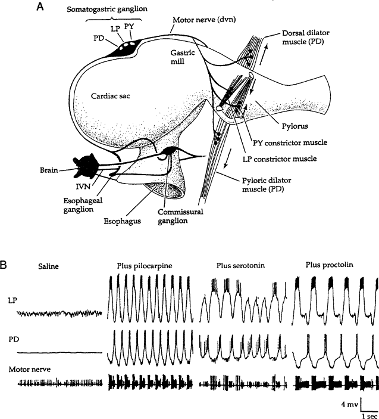 |
|---|
| Lobster Stomach, https://www.sciencedirect.com/topics/agricultural-and-biological-sciences/stomatogastric-ganglion |
Our project specifically models the pyloric CPG, which generates a familiar, steady, three-part rhythm. This network is made of six types of neurons: Anterior Burster (AB), Pyloric Dilator (PD), Lateral Pyloric (LP), Pyloric (PY), Inferior Cardiac (IC), and Ventricular Dilator (VD) neurons.
These neurons communicate through two main types of connections, or synapses. Chemical synapses can either excite or inhibit the next neuron to control the rhythm’s timing. Electrical synapses, on the other hand, act like direct tunnels between neurons. These electrical tunnels can let ions flow both ways (non-rectifying) or act as a diode (rectifying).
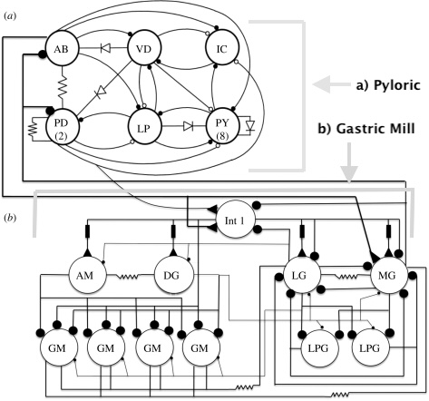 |
|---|
| Diagram of the Pyloric CPG Circuit. Connections ending in an open circle represent excitatory chemical synapses, while closed circles represent inhibitory chemical synapses. Electrical connections use standard circuit symbols: resistors show non-rectifying electrical synapses (two-way flow), and diodes show rectifying electrical synapses (one-way flow). https://pmc.ncbi.nlm.nih.gov/articles/PMC2894947/\#RSTB20090270C10 |
To simulate this system, our model uses six neuron pools, using one cell for each type. These neurons work together in three main functional groups: pacemakers, constrictors, and valves. The pacemakers drive the rhythm; the AB neuron acts as the clock, naturally setting the pace of the CPG, while the PD neurons follow its lead to open the pyloric valve and let food into the system. Working opposite to the pacemakers are the constrictors, where the LP neuron fires after the PD neuron finishes to squeeze the pylorus shut, followed by the PY neurons which help push the food further down the digestive tract. Finally, the valve neurons manage the physical flow of food, with the IC neuron controlling the entrance to the pyloric filter and the VD neurons controlling the muscles that open the lower ventricular region.
With computational neural models there is a trade-off between biological fidelity and computational efficiency when scaling from single-cell simulations to dynamic networks. At the most biologically rigorous end of the spectrum lies the Hodgkin-Huxley model. By utilizing a large system of coupled, non-linear differential equations to explicitly model the continuous activation and inactivation gating variables of individual ion channels, it offers exceptional biological accuracy and can represent a whole host of different neurons. However, this structure makes it computationally costly for hardware-constrained or large-scale network simulations.
To overcome this challenge without sacrificing the intrinsic membrane dynamics necessary to reproduce complex firing patterns of the Stomatogastric Ganglion, our implementation utilizes the Izhikevich model (Izhikevich, 2003). This phenomenological model reduces the complex Hodgkin-Huxley dynamics into a two-dimensional system of ordinary differential equations. Though it sacrifices biological fidelity and span, it is still capable of capturing the realistic spiking behaviors of 21 different types of neurons with exceptional computational efficiency:
The Izhikevich model (Izhikevich, 2003):
dv/dt = 0.04v² + 5v + 1.4 − u + I
du/dt = a(bv − u)
When v crosses threshold (30 mV in the original model; we use a fixed-point threshold near 0.3 in scaled units), the neuron resets:
v ← c
u ← u + d
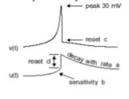 |
|---|
| Izhikevich, E. M. (2003). Simple model of spiking neurons. IEEE Transactions on Neural Networks, 14(6), 1569–1572. |
| Parameter | Meaning |
|---|---|
| a | Time scale of recovery variable u |
| b | Coupling of u to subthreshold v |
| c | After-spike reset value of v |
| d | After-spike jump in u |
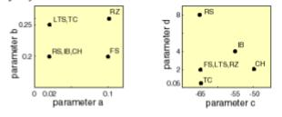 |
|---|
| Izhikevich, E. M. (2003). Simple model of spiking neurons. IEEE Transactions on Neural Networks, 14(6), 1569–1572. |
Together, (a, b, c, d) dictate neuron behaviors (tonic spiking, bursting, rebound, etc.). On the FPGA Bruce’s Izekevich Neuron implementation computationally cheapens the model, as a and b are not stored as floats; they select arithmetic right shifts in Iz_neuron, eliminating the need for multipliers. c, d, and bias current I are also stored in fixed point with a 0.01 scale relative to Izhikevich’s published tables. Additionally, 4 is factored out of dv/dt.
To calculate states of neurons in the dynamical system the ODE’s Euler integration is used.
v(n) = v(n-1) + dvdt(n-1) * dt
u(n) = u(n-1) + dudt(n-1) * dt
In Bruce’s implementation of the Izekevich model v(n) and u(n) are directly calculated. A fixed dt of 1/16 ms is simplified to a bit shift of 2 to account for the previously factored out 4 and also saving on an additional multiply. Departing from Bruce’s implementation, we did not simplify dt to a fixed bitshift of 2, so it could remain as a run-time parameter. Ultimately Izekevich’s neuron model implementation became:
dv/dt = (v² + v + 1.4>>>2 − u>>>2 + I>>>2)
du/dt = (v>>>b − u)>>> a
v(n) = v(n-1) + dvdt(n-1) >>> (dt>>2)
u(n) = u(n-1) + dudt(n-1) >>> dt
This implementation thus only requires a single true multiply per neuron to calculate v2, making it very resource efficient.
The table below lists all the neurons implemented in this model.
| Neuron | a (shift) | b (shift) | c (mV-scale) | d | Intended class |
|---|---|---|---|---|---|
| AB | 6 | 1 | −65 | 6 | Tonic bursting (pacemaker) |
| PD | 6 | 0 | −65 | 6 | Tonic spiking |
| VD | 3 | 1 | −60 | 0 | Rebound spiking |
| IC | 5 | 0 | −60 | 4 | Rebound spiking |
| PY | 5 | 0 | −60 | 4 | Rebound spiking |
| LP | 3 | 0 | −60 | 0 | Rebound spiking |
Parameters and connectivity were aligned with Anum Qassam’s pyloric simulation.
On-top of the Izekevich neuron model, Bruce implemented chemical and electrical synapse models. The chemical synapses only sum current when the presynaptic neuron spikes (action potential), and the current that passes is proportional to the weight of the synapse. For inhibitory synapses the weight would be negative, and for excitatory synapses the weight would be positive. When current is passed over time, it falls off proportionally to a decay constant tau representing the transientness of the excitation. In Bruce’s implementation dt and tau are coupled together with a bitshift as opposed to multiplies, cheapening its implementation. Deviating from Bruce’s implementation we uncoupled Tau and dt to allow for dynamic dts.
If spike = 1: v(n) = (-v(n-1)>>> tau + dt + synaptic weight)
Electrical synapses are not conditional on action potentials and continuously input current depending on the relative voltages between cells. The current passed is proportional to the conductance of the electrical synapse. Non-rectifying electrical synapses pass current between pre- and post-synaptic cells regardless of the sign of voltage difference between cells, while rectifying cells only pass current when the sign of the voltage difference matches the direction of the synapse.
No Rectification:
I1 = voltage difference >>> conductance
I2 = - voltage difference >>> conductance
Rectification when
v1 > v2: I1 = voltage difference >>> conductance and
v1 > v2: I2 = voltage difference >>> conductance
v1 < v2 I2 = 0 I1 = 0
Synapses are daisy chained to each other to model multiple synapses going into a single neuron, so all synapse modules receive the addition of an input current.
We used these to represent the various synaptic connections in the Pyloric CPG.
| TO \ FROM | AB | VD | IC | PY | LP | PD |
|---|---|---|---|---|---|---|
| AB | E | E | ||||
| VD | C- -6.25, E | C- -6.25 | C- -6.25 | E | ||
| IC | C- -6.25 | C+ +6.25 | C- -6.25 | C+ +6.25 | ||
| PY | C- -6.25 | C+ +6.25 | C- -6.25, E | C+ +6.25 | ||
| LP | C- -6.25 | C+ +6.25 | C- -6.25 | C- -6.25, E | C+ +6.25 | |
| PD | E | E | C- -6.25 * |
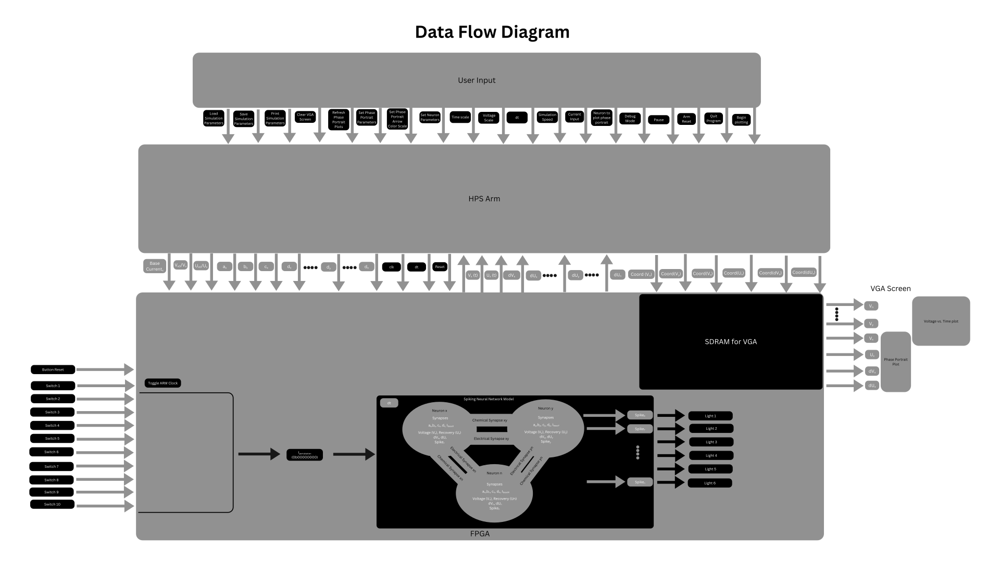 |
|---|
| Data flow diagram for the full system. |
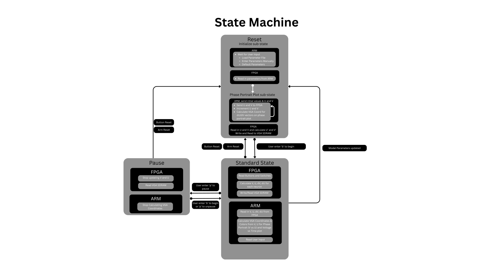 |
|---|
| State machine diagram for the full system. |
The system splits real-time integration on the Cyclone V FPGA from visualization and interaction on the ARM processor running Linux. The corresponding C application, consisting of interface.c and graphics.c, memory-maps the lightweight bus and VGA buffer to addresses defined in address_map.h. It drives the neuron clock and reset from POSIX threads, which cleanly separate the command loop, hardware resets, and the plotting loop. User interaction is driven entirely through a serial or terminal command-line interface, where commands are triggered by the first character of each “Enter Commands:” line.
Within this interface, the $ command sets the animation speed multiplier to dictate how fast the display refreshes versus default pacing, while s sets the time-trace vertical plot scale and triggers a full reset and clear. The horizontal time scale, representing the number of FPGA integration steps per displayed pixel column, is adjusted via x, where more steps yield faster simulated time per screen update. The M command sets the maximum magnitude for arrow coloring on the phase portrait. Basic system operations include c to clear the VGA buffer, q to set a kill flag causing all threads to exit, and r to run a dedicated reset thread that reapplies parallel I/O (PIO) configurations, toggles the clock, and redraws the phase portrait if needed. Users can pause or resume the plot loop via p, which controls a pause flag and condition variable, or toggle a debug print of the last frame draw time in milliseconds using D.
Parameter management is handled by the S command, which parses a
semicolon-separated line of name=value triples (such as v1=…; u2=…;
a3=…; ) where indices 1 to 6 represent per-neuron fields and surrounding
whitespace is trimmed. On success, this configuration falls through to
the G command, which prints all current neuron parameters, including v,
u, I, a, b, c, and d for each cell. Parameters can be written to a new
file via V, which refuses to overwrite existing files, or loaded from an
existing file using L. The integration step size parameter is configured
via t, which prompts the user for a value matching 1/2^dt and writes it
to the FPGA dt PIO register on the subsequent reset.
Phase portrait navigation is split into three commands: b focuses the phase portrait on a chosen neuron from 1 to 6 (representing the AB, VD, IC, PY, LP, and PD cells) and redraws its arrows without regenerating the grid if the field was already built; g generates phase-portrait grids for all six neurons by prompting for comma-separated bounds or executing a default hardware scan and reset; and u updates the phase-portrait du/dv samples directly from the hardware using the existing plot bounds without launching a full generation dialog.
Display output follows the standard DE1-SoC path, where the SDRAM framebuffer is scanned directly to the VGA output, and plotting commences only after the first hardware reset completes and a plot_start semaphore is cleared. The on-screen visualization is organized into two distinct regions. The left column displays the phase portrait, which renders the vector field as a grid of arrows mapping direction and derivative magnitude to a color scale, an explicit neuron title formatted as “Neuron #n (name)”, and a short trailing trajectory tracking a depth defined by TRAIL_DEPTH for the selected neuron.
The right region contains a six-channel scrolling display of v versus time traces, color-coded by cell identity: white for AB, red for VD, green for IC, cyan for PY, magenta for LP, and yellow for PD. Each trace row features horizontal reference lines to denote baseline tracking. Scrolling is implemented programmatically by shifting the framebuffer and drawing new data columns. The shift step scales with the speed multiplier and is strictly forced to an odd number of pixels to avoid a known hardware alignment artifact.
On the hardware fabric, the DE1_SoC_Computer.v module implements six Izhikevich neurons wired as the pyloric circuit. Each neuron uses shift-based parameters for a and b, fixed-point variables for c, d, and bias current I, a single multiply for v^2, a threshold near 0.30 in model units, and a runtime dt so the step size is not fixed in the logic. Chemical synapses use the single_synapse module with spike-triggered decay, where tau and dt are separated so synapse filtering stays consistent when the user changes the integration step. Electrical coupling uses the single_electrical_synapse module, with conductance implemented as a right shift and optional rectification on the voltage difference. Inputs are daisy-chained through the network so each cell sees a single summed current. The PIO interface exposes every neuron’s v, u, du, and dv variables for phase-portrait sampling, alongside the clock, reset, global current, initial conditions, and parameter words.
Physical board interactions dictate how this hardware layer behaves. Toggle switch SW[0] acts as the primary clock and reset multiplexer. When SW[0] is set to 0, the neuron clock runs at 50 MHz, the reset line is bound to the physical pushbutton KEY[0], and the dt initialization parameter is pulled from a hardcoded default value of 8. When SW[0] is toggled to 1, the neuron clock shifts to a PIO-driven clock, the reset line transitions to a PIO-driven reset, and the low byte of the dt parameter is read from a software-controlled PIO register driven by the HPS. Pushbutton KEY[1] enables fast modulation of the bias current to the AB and PD neurons, mimicking a serotonin-style neuromodulation experiment. Toggling KEY[1] switches the AB neuron bias between I_base+30 and I_base+30+sw_i, while simultaneously switching the PD neuron bias between I_base and I_base+sw_i. The variable offset current sw_i is mapped directly from toggle switches SW[9:1], serving as an injected current offset knob whose magnitude is displayed in hex format across the HEX3_HEX0 seven-segment displays. Visual feedback on the board’s state is provided by the onboard LEDs, where LEDR[0] monitors the active neuron clock, LEDR[1] reflects the status of the reset line, and LEDR[9:4] map the individual spike bits from cells 1 through 6.
Several implementation details were easy to get wrong during development. Because the phase plane is sampled from hardware derivatives, the plot axes in millivolts, the PIO fixed-point words, and the shared min/range metadata had to stay perfectly aligned. Phase-portrait arrows use a helper function that takes direction from (Delta v, Delta u) but draws a short, fixed pixel shaft, mapping length to color via a max magnitude parameter and forcing tiny vectors to gray so the field remains readable. Mixing this with the time-strip path, which uses raw fixed-point and plot scale instead of the millivolt conversion used on the phase axes, required high-attention when changing scales. Extending the network pyloric wiring meant carefully tracing daisy-chained chemical paths, signs, tau, shared dt, and rectifying electrical branches.
The core Izhikevich neuron and synapse Verilog style, including shifts for a and b, c/d/I parameters scaled from Izhikevich’s tables, and daisy-chained synapses, originates from Bruce Land’s ECE 5760 course materials. This project extends that core architecture by introducing a runtime dt, exported u, du, and dv variables, and decoupled tau and dt parameters within the chemical synapses. The underlying equations and parameter roles are derived from Izhikevich (2003), while the default cell parameters follow Anum Qassam’s BioNB pyloric simulation. Additionally, the VGA_arrow routine is AI-assisted code integrated into the graphics pipeline. The broader DE1-SoC computer system components are part of the standard course and Altera platform infrastructure.
Our final program and FPGA model definitely met our expectations for the project. The 6-neuron CPG circuit was simulated quite accurately and the visualizations give a clear picture of the system and individual neuron behavior. From a more subjective standpoint, the user interface is visually appealing and easy to understand. We were able to reproduce some of the same rhythm artifacts recorded from the real Pyloric CPG; however, additional parameter tuning will be needed to optimize the model within the constrains of the Izhikevich model.
Edited side-by-side comparison of all 6 neuron phase plots from the final program.
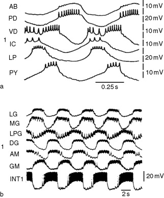 |
|---|
| Recorded intracellular values from study of pyloric CPG. (Selverston & Rabinovich) |
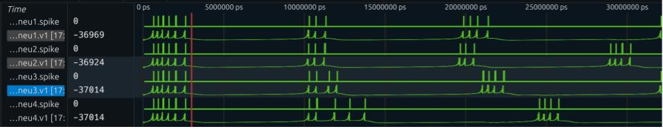 |
|---|
| Initial implementation of Izhikevich model in a simulation. |
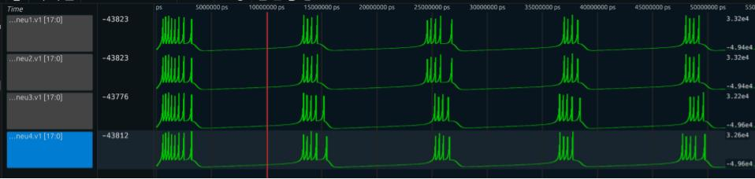 |
|---|
| Initial implementation of cardiac gangleon in a simulation |
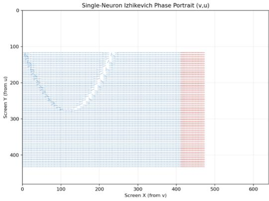 |
|---|
| Rough phase portrait generated in Python |
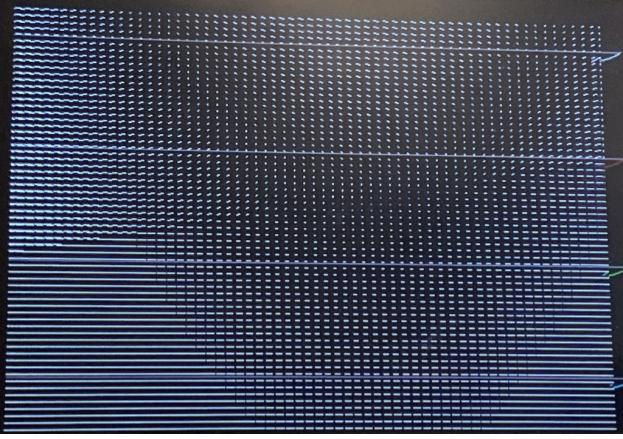 |
|---|
| Initial version of phase portrait generation. |
The project results aligned perfectly with our initial goals. We successfully implemented a biologically motivated neuron model on the FPGA featuring real-time integration and interactive dynamics from Linux. The split between deterministic hardware and flexible software visualization proved to be the right tradeoff for the DE1-SoC platform. The network remains fast and repeatable while still allowing for parameter files, integration-step adjustments, and phase-plane inspection.
This work establishes a strong foundation that suggests several future improvements. The Verilog interconnect could be generalized so the same neuron and synapse tiles can be re-targeted to other crustacean central pattern generators or slightly larger neural meshes. We also envision developing a small host-side software tool that automatically fits parameters to recorded v(t) data or compares the output to a reference rhythm. Expanding runtime parameters is another key goal. Multiplexing or widening the PIO would allow more than the current budget of a, b, c, d, v_init, u_init, global I, and dt to be runtime-editable. This includes exposing synaptic weights, tau, and electrical conductance directly from the software. Finally, implementing more detailed biological visualizations, such as schematics or muscle and motor labels, would be valuable if the pyloric narrative remains the primary focus, as the underlying logic would still consist of the exact same spiking signals.
The core Izhikevich neuron and synapse Verilog style, including shifts for a and b, c/d/I parameters scaled from Izhikevich’s tables, and daisy-chained synapses, originates from Bruce Land’s ECE 5760 course materials. This project extends that core architecture by introducing a runtime dt, exported u, du, and dv variables, and decoupled tau and dt parameters within the chemical synapses. The underlying equations and parameter roles are derived from Izhikevich (2003), while the default cell parameters follow Anum Qassam’s BioNB pyloric simulation. Additionally, the VGA_arrow routine is AI-assisted code integrated into the graphics pipeline. The broader DE1-SoC computer system components are part of the standard course and Altera platform infrastructure.
In summary, we designed and implemented the specific six-neuron pyloric instance, created the general system design, and created the entire C program to turn the FPGA neuron simulation into a pleasant and informative visualization
The group approves this report for inclusion on the course website.
The group approves the video for inclusion on the course youtube channel.
AI Assistance:
Ambroise M, Levi T, Joucla S, Yvert B and Saïghi S (2013) Real-time biomimetic Central Pattern Generators in an FPGA for hybrid experiments. Front. Neurosci. 7:215. doi: 10.3389/fnins.2013.00215
Selverston AI. Invertebrate central pattern generator circuits. Philos Trans R Soc Lond B Biol Sci. 2010 Aug 12;365(1551):2329-45. doi: 10.1098/rstb.2009.0270. PMID: 20603355; PMCID: PMC2894947.
Selverston, A. I., & Rabinovich, M. I. (2009). Stomatogastric ganglion models. In L. R. Squire (Ed.), Encyclopedia of Neuroscience (pp. 425–435). Academic Press. https://doi.org/10.1016/B978-008045046-9.01432-7
Anum Qassam: https://people.ece.cornell.edu/land/PROJECTS/BioNB222section/StudentWork/aq23/FINAL/Simulation.htm
Bruce Land: https://people.ece.cornell.edu/land/courses/ece5760/DDA/NeuronIndex.htm
Other relevant links:
https://www.izhikevich.org/publications/spikes.pdf
https://www.sciencedirect.com/science/chapter/referencework/pii/B9780080450469014327
///////////////////////////////////////////////////////////////////////////////
// interface.c
//
// Program for interfacing with FPGA neuron simulation for ECE5760
// final project
//
// Written by Chris Parker and Lucas Keith
//
// Written for C99 standard or newer
// Compile with:
// gcc -std=gnu99 -O2 interface.c graphics.c -pthread -lm -lrt -o interface
///////////////////////////////////////////////////////////////////////////////
// Units are mV for V and uA for U
// t is in mSeconds (milliseconds) one time step is 1/16 msec
// Standard Library
#include <math.h>
#include <stdbool.h>
#include <stdint.h>
#include <stdio.h>
#include <stdlib.h>
#include <string.h>
// Linux
#include <fcntl.h>
#include <pthread.h>
#include <semaphore.h>
#include <sys/ipc.h>
#include <sys/mman.h>
#include <sys/shm.h>
#include <sys/time.h>
#include <sys/types.h>
#include <time.h>
#include <unistd.h>
// Custom imports
#include "address_map.h"
#include "graphics.h"
//////////////////////////////////////////////////////////////
/// Math macros
#define int2fix(a) (((int)(a)) << 16)
#define fix2int(a) ((signed char)((a) >> 16))
#define float2fix(a) (int)(a * 65536.0f)
#define fix2float(a) (((float)(a)) / 65536.0f)
#define MAX(a, b) ((a) > (b) ? (a) : (b))
#define MIN(a, b) ((a) < (b) ? (a) : (b))
#define CLAMP(a, min, max) (MAX((min), MIN((a), (max))))
#define CLAMP0(a, max) (CLAMP((a), 0, (max)))
//////////////////////////////////////////////////////////////
//////////////////////////////////////////////////////////////
/// VGA Macros
// Draw an arrow on the screen
static void VGA_arrow(int x0, int y0, int x1, int y1, float mag_max);
// Plot centers
#define ROW1_Y 120
#define ROW2_Y 370
#define COL1_X_START 5
#define COL1_X_END 320
#define COL2_X_START 320
#define COL2_X_END 635
#define COL_WIDTH (COL2_X_END - COL1_X_START)
// Plot scale
#define PLOT_SCALE 35
#define TIME_SCALE 1
#define MIN_V -150.0f
#define RANGE_V 90.0f - MIN_V // 40.0f
#define MIN_U -60.0f
#define RANGE_U 80.0f - MIN_U
#define NUM_ARROWS_HORIZONTAL 40
#define NUM_ARROWS_VERTICAL NUM_ARROWS_HORIZONTAL
#define TRAIL_DEPTH 20
#define TRAIL_BG black
volatile float plot_scale = PLOT_SCALE;
// Number of iterations per pixel
volatile int time_scale = TIME_SCALE;
volatile int neuron_select = 1;
volatile int last_drawtime_ms = 0;
static inline int centered_to_screen_x(float x_c) {
return ORIGIN_X + (int)lroundf(x_c);
}
static inline int centered_to_screen_y(float y_c) {
return ORIGIN_Y + (int)lroundf(y_c); // +y up in math space
}
int convert_to_VGAXCoord(float valueV, float minV, float rangeV) {
float vtoPixel = COL1_X_END / rangeV;
int x = (int)(((valueV - minV) * vtoPixel) + 0.5f);
return x;
}
int convert_to_VGAYCoord(float valueU, float minU, float rangeU) {
float utoPixel = SCREEN_YMAX / rangeU;
float y = 479 - (int)(((valueU - minU) * utoPixel) + 0.5f);
return y;
}
int convert_to_FPGA_value(float value) {
int fpgaValue = float2fix(value / 100.0f);
return fpgaValue;
}
float convert_FPGA_Value_to_mV(int value) { return fix2float(value) * 100.0f; }
//////////////////////////////////////////////////////////////
//////////////////////////////////////////////////////////////
/// FPGA I/O
// Reset thread
void *reset();
// the light weight bus base
void *h2p_lw_virtual_base;
// pixel buffer
void *vga_pixel_virtual_base;
// character buffer
void *vga_char_virtual_base;
// /dev/mem file id
int fd;
void *pio_virtual_base;
// initial conditions
volatile int *v1_init_ptr = NULL;
volatile int *v2_init_ptr = NULL;
volatile int *v3_init_ptr = NULL;
volatile int *v4_init_ptr = NULL;
volatile int *v5_init_ptr = NULL;
volatile int *v6_init_ptr = NULL;
volatile int *u1_init_ptr = NULL;
volatile int *u2_init_ptr = NULL;
volatile int *u3_init_ptr = NULL;
volatile int *u4_init_ptr = NULL;
volatile int *u5_init_ptr = NULL;
volatile int *u6_init_ptr = NULL;
volatile int *ab_ptr = NULL;
volatile int *ab56_ptr = NULL;
volatile int *c1_ptr = NULL;
volatile int *c2_ptr = NULL;
volatile int *c3_ptr = NULL;
volatile int *c4_ptr = NULL;
volatile int *c5_ptr = NULL;
volatile int *c6_ptr = NULL;
volatile int *d1_ptr = NULL;
volatile int *d2_ptr = NULL;
volatile int *d3_ptr = NULL;
volatile int *d4_ptr = NULL;
volatile int *d5_ptr = NULL;
volatile int *d6_ptr = NULL;
volatile int *i_ptr = NULL;
volatile int *dt_ptr = NULL;
// control
volatile int *rst_ptr = NULL;
volatile int *clk_ptr = NULL;
// output
volatile int *v1_ptr = NULL;
volatile int *v2_ptr = NULL;
volatile int *v3_ptr = NULL;
volatile int *v4_ptr = NULL;
volatile int *v5_ptr = NULL;
volatile int *v6_ptr = NULL;
volatile int *u1_ptr = NULL;
volatile int *u2_ptr = NULL;
volatile int *u3_ptr = NULL;
volatile int *u4_ptr = NULL;
volatile int *u5_ptr = NULL;
volatile int *u6_ptr = NULL;
volatile int *du1_ptr = NULL;
volatile int *dv1_ptr = NULL;
volatile int *du2_ptr = NULL;
volatile int *dv2_ptr = NULL;
volatile int *du3_ptr = NULL;
volatile int *dv3_ptr = NULL;
volatile int *du4_ptr = NULL;
volatile int *dv4_ptr = NULL;
volatile int *du5_ptr = NULL;
volatile int *dv5_ptr = NULL;
volatile int *du6_ptr = NULL;
volatile int *dv6_ptr = NULL;
//////////////////////////////////////////////////////////////
//////////////////////////////////////////////////////////////
/// Threading and state
// Protection
pthread_mutex_t speed_lock = PTHREAD_MUTEX_INITIALIZER;
pthread_mutex_t param_lock = PTHREAD_MUTEX_INITIALIZER;
pthread_mutex_t hardware_lock = PTHREAD_MUTEX_INITIALIZER;
pthread_mutex_t running_lock = PTHREAD_MUTEX_INITIALIZER;
// the thread identifiers
pthread_t thread_read, thread_reset, thread_plot;
// semaphores
sem_t update_params; // tells parameter update thread to update parameters
sem_t reset_flag; // tells reset thread to reset integrator
sem_t plot_start; // tells plot thread to start plotting
pthread_cond_t paused_cond = PTHREAD_COND_INITIALIZER;
// Program state variables
bool kill_flag;
bool phase_plot;
bool pause_flag = false;
bool dprint_flag = false;
float speed_multiplier = 1.0f;
// measure time
struct timeval t1, t2;
double elapsedTime;
#define DEFAULT_TIME_US 10000
//////////////////////////////////////////////////////////////
//////////////////////////////////////////////////////////////
/// Neuron parameters
#define NUM_NEURONS 6
// Fallback fixed-point parameters
#define V1_INIT_FIX (0x34CCD)
#define V2_INIT_FIX (0x34CCD)
#define V3_INIT_FIX (0x34CCD)
#define V4_INIT_FIX (0x34CCD)
#define V5_INIT_FIX (0x34CCD)
#define V6_INIT_FIX (0x34CCD)
#define U1_INIT_FIX (0x3CCCD)
#define U2_INIT_FIX (0x3CCCD)
#define U3_INIT_FIX (0x3CCCD)
#define U4_INIT_FIX (0x3CCCD)
#define U5_INIT_FIX (0x3CCCD)
#define U6_INIT_FIX (0x3CCCD)
#define A_FIX (6)
#define B_FIX (2)
#define A1_FIX (6)
#define A2_FIX (6)
#define A3_FIX (5)
#define A4_FIX (3)
#define A5_FIX (3)
#define A6_FIX (5)
#define B1_FIX (1)
#define B2_FIX (2)
#define B3_FIX (0)
#define B4_FIX (0)
#define B5_FIX (1)
#define B6_FIX (0)
#define A1_FIXS ((A1_FIX << A1_SHIFT) & A1_MASK)
#define A2_FIXS ((A2_FIX << A2_SHIFT) & A2_MASK)
#define A3_FIXS ((A3_FIX << A3_SHIFT) & A3_MASK)
#define A4_FIXS ((A4_FIX << A4_SHIFT) & A4_MASK)
#define A5_FIXS ((A5_FIX << A5_SHIFT) & A5_MASK)
#define A6_FIXS ((A6_FIX << A6_SHIFT) & A6_MASK)
#define B1_FIXS ((B1_FIX << B1_SHIFT) & B1_MASK)
#define B2_FIXS ((B2_FIX << B2_SHIFT) & B2_MASK)
#define B3_FIXS ((B3_FIX << B3_SHIFT) & B3_MASK)
#define B4_FIXS ((B4_FIX << B4_SHIFT) & B4_MASK)
#define B5_FIXS ((B5_FIX << B5_SHIFT) & B5_MASK)
#define B6_FIXS ((B6_FIX << B6_SHIFT) & B6_MASK)
#define AB_FIX \
((A1_FIXS) | (A2_FIXS) | (A3_FIXS) | (A4_FIXS) | (B1_FIXS) | (B2_FIXS) | \
(B3_FIXS) | (B4_FIXS))
#define AB56_FIX ((A5_FIXS) | (A6_FIXS) | (B5_FIXS) | (B6_FIXS))
#define C_FLOAT -55.0f
#define D_FLOAT 4.0f
#define C1_FLOAT (-65.f)
#define C2_FLOAT (-50.f)
#define C3_FLOAT (-60.f)
#define C4_FLOAT (-60.f)
#define C5_FLOAT (-60.f)
#define C6_FLOAT (-60.f)
#define D1_FLOAT (6.f)
#define D2_FLOAT (2.f)
#define D3_FLOAT (4.f)
#define D4_FLOAT (0.f)
#define D5_FLOAT (0.f)
#define D6_FLOAT (4.f)
#define C1_FIX (0x38000)
#define C2_FIX (0x3599A)
#define C3_FIX (0x36667)
#define C4_FIX (0x36667)
#define C5_FIX (0x36667)
#define C6_FIX (0x36667)
#define D1_FIX (0x0051E)
#define D2_FIX (0x00F5C)
#define D3_FIX (0x00A3D)
#define D4_FIX (0x00000)
#define D5_FIX (0x00000)
#define D6_FIX (0x00A3D)
#define I_FIX (0x00800)
/* Neuron u-update uses (du >>> dt); CardiacGanglionSim used >>>4, so 4 is a
* good default. */
#define DT_FIX (6)
#define DT_FIXS (DT_FIX & DT_MASK)
// Initial neuron parameters
int a_init_vals[NUM_NEURONS] = {A1_FIX, A2_FIX, A3_FIX, A4_FIX, A5_FIX, A6_FIX};
int b_init_vals[NUM_NEURONS] = {B1_FIX, B2_FIX, B3_FIX, B4_FIX, B5_FIX, B6_FIX};
int c_init_vals[NUM_NEURONS] = {C1_FIX, C2_FIX, C3_FIX, C4_FIX, C5_FIX, C6_FIX};
int d_init_vals[NUM_NEURONS] = {D1_FIX, D2_FIX, D3_FIX, D4_FIX, D5_FIX, D6_FIX};
int vi_init_vals[NUM_NEURONS] = {V1_INIT_FIX, V2_INIT_FIX, V3_INIT_FIX,
V4_INIT_FIX, V5_INIT_FIX, V6_INIT_FIX};
int ui_init_vals[NUM_NEURONS] = {U1_INIT_FIX, U2_INIT_FIX, U3_INIT_FIX,
U4_INIT_FIX, U5_INIT_FIX, U6_INIT_FIX};
int i_init_val = I_FIX;
// Current neuron parameters
// 4-bit
int a_params[NUM_NEURONS];
int b_params[NUM_NEURONS];
// 18-bit fixed
int c_params[NUM_NEURONS];
int d_params[NUM_NEURONS];
int vi_params[NUM_NEURONS];
int ui_params[NUM_NEURONS];
// Single 18-bit fixed
int ibase_param;
int dt_param;
typedef struct neuron_params {
int length; // Number of neurons
int *i; // Base current
int *vi; // Initial membrane potential
int *ui; // Initial membrane recovery variable value
// Behavioral parameters
int *a;
int *b;
int *c;
int *d;
} neuron_params_t;
neuron_params_t current_params = {NUM_NEURONS, &ibase_param, vi_params,
ui_params, a_params, b_params,
c_params, d_params};
char *neuron_names[] = {"AB", "VD", "IC", "PY", "LP", "PD"};
void copy_params(neuron_params_t *src, neuron_params_t *dest) {
// Skip the work if they're the same or NULL
if (src == dest) {
return;
}
dest->length = src->length;
*dest->i = *src->i;
memmove(dest->a, src->a, sizeof(int) * src->length);
memmove(dest->b, src->b, sizeof(int) * src->length);
memmove(dest->c, src->c, sizeof(int) * src->length);
memmove(dest->d, src->d, sizeof(int) * src->length);
memmove(dest->vi, src->vi, sizeof(int) * src->length);
memmove(dest->ui, src->ui, sizeof(int) * src->length);
}
void set_defaults(neuron_params_t *params) {
params->length = NUM_NEURONS;
*params->i = i_init_val;
for (int i = 0; i < NUM_NEURONS; i++) {
params->vi[i] = vi_init_vals[i];
params->ui[i] = ui_init_vals[i];
params->a[i] = a_init_vals[i];
params->b[i] = b_init_vals[i];
params->c[i] = c_init_vals[i];
params->d[i] = d_init_vals[i];
}
}
bool parse_params_raw(char *str, neuron_params_t *params) {
// format is `<p1>=<v1>; ...; <pn>=<vn>;`
// 2 delimeters: `;` and `=` with arbitrary whitespace
// ; separates tripples, = separates params and values
const char *t_delim = ";";
const char *p_delim = "=";
char *saveptr_in = NULL;
char *saveptr_out = NULL;
char *str_in, *str_out, *token, *param, *val;
for (str_out = str;; str_out = NULL) {
token = strtok_r(str_out, t_delim, &saveptr_out);
if (token == NULL)
break;
if (token != NULL && (*token == '\n' || *token == '\0' || *token == '\t'))
break;
str_in = token;
param = strtok_r(str_in, p_delim, &saveptr_in);
// Fail if param or val is missing
if (param == NULL) {
printf("WARNING: parameter was null.\n");
return false;
}
str_in = NULL;
val = strtok_r(str_in, p_delim, &saveptr_in);
if (val == NULL) {
printf("WARNING: value was null.\n");
return false;
}
// Clear blank spaces
for (; *param != '\0' && *(param) == ' '; param++)
;
for (; *val != '\0' && *(val) == ' '; val++)
;
// Remove trailing space
char *curr;
for (curr = param; *curr != '\0' && *curr != ' '; curr++)
;
*curr = '\0';
for (curr = val; *curr != '\0' && *curr != ' '; curr++)
;
*curr = '\0';
int index = 0;
int status;
int parsed_value = 0;
int *chosen_array;
if (*param == 'i') {
parsed_value = atoi(val);
chosen_array = params->i;
index = 1;
} else {
index = atoi(param + 1);
switch (*param) {
case 'v':
chosen_array = params->vi;
parsed_value = atoi(val);
break;
case 'u':
chosen_array = params->ui;
parsed_value = atoi(val);
break;
case 'a':
chosen_array = params->a;
parsed_value = atoi(val);
break;
case 'b':
chosen_array = params->b;
parsed_value = atoi(val);
break;
case 'c':
chosen_array = params->c;
parsed_value = atoi(val);
break;
case 'd':
chosen_array = params->d;
parsed_value = atoi(val);
break;
default:
printf("WARNING: Ignoring unknown parameter %c.\n", *param);
}
}
if (index > params->length || index < 1) {
printf("WARNING: Index %d out of range for # parameters %d.\n", index,
params->length);
return false;
}
// Set the appopriate value in the parameter array
chosen_array[index - 1] = parsed_value;
}
return true;
}
// Parse parameters from input buffer
bool parse_params(char *str, neuron_params_t *params) {
// format is `<p1>=<v1>; ...; <pn>=<vn>;`
// 2 delimeters: `;` and `=` with arbitrary whitespace
// ; separates tripples, = separates params and values
const char *t_delim = ";";
const char *p_delim = "=";
char *saveptr_in = NULL;
char *saveptr_out = NULL;
char *str_in, *str_out, *token, *param, *val;
for (str_out = str;; str_out = NULL) {
token = strtok_r(str_out, t_delim, &saveptr_out);
if (token == NULL)
break;
if (token != NULL && (*token == '\n' || *token == '\0' || *token == '\t'))
break;
str_in = token;
param = strtok_r(str_in, p_delim, &saveptr_in);
// Fail if param or val is missing
if (param == NULL) {
printf("WARNING: parameter was null.\n");
return false;
}
str_in = NULL;
val = strtok_r(str_in, p_delim, &saveptr_in);
if (val == NULL) {
printf("WARNING: value was null.\n");
return false;
}
// Clear blank spaces
for (; *param != '\0' && *(param) == ' '; param++)
;
for (; *val != '\0' && *(val) == ' '; val++)
;
// Remove trailing space
char *curr;
for (curr = param; *curr != '\0' && *curr != ' '; curr++)
;
*curr = '\0';
for (curr = val; *curr != '\0' && *curr != ' '; curr++)
;
*curr = '\0';
int index = 0;
int status;
int parsed_value = 0;
int *chosen_array;
if (*param == 'i') {
parsed_value = convert_to_FPGA_value(atof(val));
chosen_array = params->i;
index = 1;
} else {
index = atoi(param + 1);
switch (*param) {
case 'v':
chosen_array = params->vi;
parsed_value = convert_to_FPGA_value(atof(val));
break;
case 'u':
chosen_array = params->ui;
parsed_value = convert_to_FPGA_value(atof(val));
break;
// a & b are used as (...) >>> a thus 0.5 -> -round(log2f(0.5)) = - (-1) =
// 1
case 'a':
chosen_array = params->a;
parsed_value = (int)(0.5 - log2f(atof(val)));
break;
case 'b':
chosen_array = params->b;
parsed_value = (int)(0.5 - log2f(atof(val)));
break;
case 'c':
chosen_array = params->c;
parsed_value = convert_to_FPGA_value(atof(val));
break;
case 'd':
chosen_array = params->d;
parsed_value = convert_to_FPGA_value(atof(val));
break;
default:
printf("WARNING: Ignoring unknown parameter %c.\n", *param);
}
}
if (index > params->length || index < 1) {
printf("WARNING: Index %d out of range for # parameters %d.\n", index,
params->length);
return false;
}
// Set the appopriate value in the parameter array
chosen_array[index - 1] = parsed_value;
}
return true;
}
#define DEFAULT_TYPE 0
#define FIX18_TYPE 1
#define NIBBLE_TYPE 2
#define FIX18_SINGLETON_TYPE 3
void print_mvfix(int p) { printf("%f", convert_FPGA_Value_to_mV(p)); }
void print_ab(int p) { printf("%f", 1.0f / powf(2, p)); }
void print_default(int p) { printf("%d", p); }
void print_params(int *param_array, char prefix, int type) {
printf("\t%c :\n", prefix);
if (param_array == NULL) {
printf("\t [ 0] -- <NULL PARAMETER ARRAY>\n");
return;
}
// Print function for given type
void (*pfunc)(int);
int size = NUM_NEURONS;
int index_offset = 1;
switch (type) {
case FIX18_TYPE:
pfunc = print_mvfix;
break;
case NIBBLE_TYPE:
pfunc = print_ab;
break;
case FIX18_SINGLETON_TYPE:
pfunc = print_mvfix;
size = 1;
index_offset = 0;
break;
case DEFAULT_TYPE:
default:
pfunc = print_default;
break;
}
for (int i = 0; i < size; i++) {
printf("\t [%.2d] = ", i + index_offset);
pfunc(param_array[i]);
puts("\n");
}
}
#define NUM_PARAMS 7
void read_param_file(char *path, neuron_params_t *params) {
// set_defaults(params);
FILE *param_file;
param_file = fopen(path, "r");
if (param_file == NULL) {
printf("ERROR: Cannot read parameter file: %s\n", path);
return;
}
if (access(path, F_OK) != 0) {
printf("WARNING: Cannot find parameter file:%s\n", path);
return;
}
param_file = fopen(path, "r");
if (param_file == NULL) {
printf("WARNING: Cannot read from parameter file:%s\n", path);
return;
}
size_t buff_len = sizeof("par000 = 00000; ") * params->length * NUM_PARAMS;
char *inbuff = malloc(buff_len);
size_t ret = fread(inbuff, 1, buff_len - 1, param_file);
fclose(param_file);
if (ret < buff_len - 2) {
if (ferror(param_file)) {
printf("ERROR: File read error.\n");
free(inbuff);
return;
}
if (!feof(param_file)) {
printf(
"WARNING: Could not read entire file. File format may be invalid.\n");
}
}
inbuff[buff_len - 1] = '\0';
inbuff[ret] = '\0';
(void)parse_params_raw(inbuff, params);
free(inbuff);
}
void write_param_file(char *path, const neuron_params_t *params) {
FILE *param_file;
// Allocate memory for each key-val pair + formatting for each type of
// parameter
// Check if file exists
if (access(path, F_OK) == 0) {
printf("WARNING: Parameters not saved! Parameter file already exists.\n");
return;
}
param_file = fopen(path, "w");
if (param_file == NULL) {
printf("ERROR: Cannot write parameter file: %s", path);
return;
}
size_t buff_len = sizeof("par000 = 00000; ") * params->length * NUM_PARAMS;
char *outbuf = malloc(buff_len);
char *head = outbuf;
int written = 0;
int remaining = buff_len;
written = snprintf(head, remaining, "%c = %d;", 'i', *params->i);
remaining -= written;
head += written;
const int *p_ptrs[] = {params->vi, params->ui, params->a,
params->b, params->c, params->d};
const char p_chars[] = {'v', 'u', 'a', 'b', 'c', 'd'};
for (int j = 0; j < sizeof(p_chars); j++) {
for (int i = 0; i < params->length; i++) {
written = snprintf(head, remaining, "%c%d = %d;", p_chars[j], i + 1,
(p_ptrs[j])[i]);
remaining -= written;
if (remaining <= 1) {
printf("ERROR: Overran allocated memory when writing parameters... "
"file not written.\n");
free(outbuf);
return;
}
head += written;
}
}
*(++head) = '\n';
*(++head) = '\0';
remaining -= 2;
fwrite(outbuf, 1, buff_len, param_file);
// Cleanup
fclose(param_file);
free(outbuf);
}
//////////////////////////////////////////////////////////////
/// Neuron phase plots
typedef struct phase_plot {
int id;
float minV;
float maxV;
float rangeV;
float minU;
float maxU;
float rangeU;
int num_samples_v;
int num_samples_u;
float
*du_plot; // 2D array (index with plot[index_u * num_samples_u + index_v])
float
*dv_plot; // 2D array (index with plot[index_u * num_samples_u + index_v])
} phase_plot_t;
phase_plot_t *neuron_plots[NUM_NEURONS];
bool plots_populated = false;
void plot_phase_portait(phase_plot_t *plt);
void init_plot(phase_plot_t *p, int id) {
p->id = id;
p->minV = 0.;
p->maxV = 0.;
p->rangeV = 0.;
p->minU = 0.;
p->maxU = 0.;
p->rangeU = 0.;
p->num_samples_v = 0;
p->num_samples_u = 0;
p->du_plot = NULL;
p->dv_plot = NULL;
}
void free_plots() {
for (int i = 0; i < NUM_NEURONS; i++) {
phase_plot_t *plt = neuron_plots[i];
if (plt->du_plot != NULL) {
free(plt->du_plot);
plt->du_plot = NULL;
}
if (plt->dv_plot != NULL) {
free(plt->dv_plot);
plt->dv_plot = NULL;
}
}
}
void update_all_phase_portrait_values() {
int num_arrows_vertical = neuron_plots[0]->num_samples_u;
int num_arrows_horizontal = neuron_plots[0]->num_samples_v;
float duf1, duf2, duf3, duf4, duf5, duf6;
float dvf1, dvf2, dvf3, dvf4, dvf5, dvf6;
float minV = neuron_plots[0]->minV;
float minU = neuron_plots[0]->minU;
float incrV = neuron_plots[0]->rangeV / (float)num_arrows_horizontal;
float incrU = neuron_plots[0]->rangeU / (float)num_arrows_vertical;
pthread_mutex_lock(&hardware_lock);
*rst_ptr = true;
*clk_ptr = false;
for (int i = 0; i < num_arrows_horizontal; i++) {
for (int j = 0; j < num_arrows_vertical; j++) {
// Set operating point (v,u) in fixed-point hardware space
*v1_init_ptr = convert_to_FPGA_value(minV + (i * incrV));
*v2_init_ptr = convert_to_FPGA_value(minV + (i * incrV));
*v3_init_ptr = convert_to_FPGA_value(minV + (i * incrV));
*v4_init_ptr = convert_to_FPGA_value(minV + (i * incrV));
*u1_init_ptr = convert_to_FPGA_value(minU + (j * incrU));
*u2_init_ptr = convert_to_FPGA_value(minU + (j * incrU));
*u3_init_ptr = convert_to_FPGA_value(minU + (j * incrU));
*u4_init_ptr = convert_to_FPGA_value(minU + (j * incrU));
*u5_init_ptr = convert_to_FPGA_value(minU + (j * incrU));
*u6_init_ptr = convert_to_FPGA_value(minU + (j * incrU));
// Step hardware and read derivatives at this operating point
*clk_ptr = true;
duf1 = convert_FPGA_Value_to_mV(*du1_ptr);
dvf1 = convert_FPGA_Value_to_mV(*dv1_ptr);
duf2 = convert_FPGA_Value_to_mV(*du2_ptr);
dvf2 = convert_FPGA_Value_to_mV(*dv2_ptr);
duf3 = convert_FPGA_Value_to_mV(*du3_ptr);
dvf3 = convert_FPGA_Value_to_mV(*dv3_ptr);
duf4 = convert_FPGA_Value_to_mV(*du4_ptr);
dvf4 = convert_FPGA_Value_to_mV(*dv4_ptr);
duf5 = convert_FPGA_Value_to_mV(*du5_ptr);
dvf5 = convert_FPGA_Value_to_mV(*dv5_ptr);
duf6 = convert_FPGA_Value_to_mV(*du6_ptr);
dvf6 = convert_FPGA_Value_to_mV(*dv6_ptr);
*clk_ptr = false;
neuron_plots[0]->du_plot[j * num_arrows_vertical + i] = duf1;
neuron_plots[1]->du_plot[j * num_arrows_vertical + i] = duf2;
neuron_plots[2]->du_plot[j * num_arrows_vertical + i] = duf3;
neuron_plots[3]->du_plot[j * num_arrows_vertical + i] = duf4;
neuron_plots[4]->du_plot[j * num_arrows_vertical + i] = duf5;
neuron_plots[5]->du_plot[j * num_arrows_vertical + i] = duf6;
neuron_plots[0]->dv_plot[j * num_arrows_vertical + i] = dvf1;
neuron_plots[1]->dv_plot[j * num_arrows_vertical + i] = dvf2;
neuron_plots[2]->dv_plot[j * num_arrows_vertical + i] = dvf3;
neuron_plots[3]->dv_plot[j * num_arrows_vertical + i] = dvf4;
neuron_plots[4]->dv_plot[j * num_arrows_vertical + i] = dvf5;
neuron_plots[5]->dv_plot[j * num_arrows_vertical + i] = dvf6;
}
}
*rst_ptr = false;
pthread_mutex_unlock(&hardware_lock);
}
void get_all_phase_portrait_values(float minV, float rangeV, float minU,
float rangeU, int num_arrows_horizontal,
int num_arrows_vertical) {
float maxV = minV + rangeV;
float maxU = minU + rangeU;
float incrV = rangeV / (float)num_arrows_horizontal;
float incrU = rangeU / (float)num_arrows_vertical;
// Set parameters
for (int i = 0; i < NUM_NEURONS; i++) {
phase_plot_t *plt = neuron_plots[i];
plt->minV = minV;
plt->minU = minU;
plt->maxU = maxU;
plt->maxV = maxV;
plt->rangeU = rangeU;
plt->rangeV = rangeV;
plt->num_samples_u = num_arrows_vertical;
plt->num_samples_v = num_arrows_horizontal;
// Alloc or realloc memory for plot values
if (plt->dv_plot == NULL) {
plt->dv_plot = malloc(sizeof(plt->dv_plot) * num_arrows_horizontal *
num_arrows_vertical);
} else {
plt->dv_plot =
realloc(plt->dv_plot, sizeof(plt->dv_plot) * num_arrows_horizontal *
num_arrows_vertical);
}
if (plt->du_plot == NULL) {
plt->du_plot = malloc(sizeof(plt->du_plot) * num_arrows_horizontal *
num_arrows_vertical);
} else {
plt->du_plot =
realloc(plt->du_plot, sizeof(plt->du_plot) * num_arrows_horizontal *
num_arrows_vertical);
}
}
float duf1 = 0.0f, dvf1 = 0.0f, duf2 = 0.0f, dvf2 = 0.0f, duf3 = 0.0f,
dvf3 = 0.0f, duf4 = 0.0f, dvf4 = 0.0f, duf5 = 0.0f, dvf5 = 0.0f,
duf6 = 0.0f, dvf6 = 0.0f;
float duf = 0.0f, dvf = 0.0f;
// Get du and dv for each (u,v) sample from hardware
pthread_mutex_lock(&hardware_lock);
*rst_ptr = true;
*clk_ptr = false;
for (int i = 0; i < num_arrows_horizontal; i++) {
for (int j = 0; j < num_arrows_vertical; j++) {
// Set operating point (v,u) in fixed-point hardware space
*v1_init_ptr = convert_to_FPGA_value(minV + (i * incrV));
*v2_init_ptr = convert_to_FPGA_value(minV + (i * incrV));
*v3_init_ptr = convert_to_FPGA_value(minV + (i * incrV));
*v4_init_ptr = convert_to_FPGA_value(minV + (i * incrV));
*u1_init_ptr = convert_to_FPGA_value(minU + (j * incrU));
*u2_init_ptr = convert_to_FPGA_value(minU + (j * incrU));
*u3_init_ptr = convert_to_FPGA_value(minU + (j * incrU));
*u4_init_ptr = convert_to_FPGA_value(minU + (j * incrU));
*u5_init_ptr = convert_to_FPGA_value(minU + (j * incrU));
*u6_init_ptr = convert_to_FPGA_value(minU + (j * incrU));
// Step hardware and read derivatives at this operating point
*clk_ptr = true;
duf1 = convert_FPGA_Value_to_mV(*du1_ptr);
dvf1 = convert_FPGA_Value_to_mV(*dv1_ptr);
duf2 = convert_FPGA_Value_to_mV(*du2_ptr);
dvf2 = convert_FPGA_Value_to_mV(*dv2_ptr);
duf3 = convert_FPGA_Value_to_mV(*du3_ptr);
dvf3 = convert_FPGA_Value_to_mV(*dv3_ptr);
duf4 = convert_FPGA_Value_to_mV(*du4_ptr);
dvf4 = convert_FPGA_Value_to_mV(*dv4_ptr);
duf5 = convert_FPGA_Value_to_mV(*du5_ptr);
dvf5 = convert_FPGA_Value_to_mV(*dv5_ptr);
duf6 = convert_FPGA_Value_to_mV(*du6_ptr);
dvf6 = convert_FPGA_Value_to_mV(*dv6_ptr);
*clk_ptr = false;
neuron_plots[0]->du_plot[j * num_arrows_vertical + i] = duf1;
neuron_plots[1]->du_plot[j * num_arrows_vertical + i] = duf2;
neuron_plots[2]->du_plot[j * num_arrows_vertical + i] = duf3;
neuron_plots[3]->du_plot[j * num_arrows_vertical + i] = duf4;
neuron_plots[4]->du_plot[j * num_arrows_vertical + i] = duf5;
neuron_plots[5]->du_plot[j * num_arrows_vertical + i] = duf6;
neuron_plots[0]->dv_plot[j * num_arrows_vertical + i] = dvf1;
neuron_plots[1]->dv_plot[j * num_arrows_vertical + i] = dvf2;
neuron_plots[2]->dv_plot[j * num_arrows_vertical + i] = dvf3;
neuron_plots[3]->dv_plot[j * num_arrows_vertical + i] = dvf4;
neuron_plots[4]->dv_plot[j * num_arrows_vertical + i] = dvf5;
neuron_plots[5]->dv_plot[j * num_arrows_vertical + i] = dvf6;
}
}
*rst_ptr = false;
pthread_mutex_unlock(&hardware_lock);
}
//////////////////////////////////////////////////////////////
//////////////////////////////////////////////////////////////
/// Command line interface
float max_mag = 150.f;
char input_buffer[512];
void *read1() {
int restart;
int run_count = 0;
while (1) {
restart = false;
sem_wait(&reset_flag); // wait for reset to complete if it is ongoing
// wait for print done
// lock the input_buffer
pthread_mutex_lock(¶m_lock); // protect parameter access during input
// the actual enter
// read and parse input
printf("Enter Commands: ");
fgets(input_buffer, sizeof(input_buffer), stdin);
switch (input_buffer[0]) {
case '$':
// speed up animation
printf("\nSet Speed Multiplier to: ");
(void)(void *)fgets(input_buffer, sizeof(input_buffer), stdin);
pthread_mutex_lock(&speed_lock);
speed_multiplier = atof(input_buffer);
pthread_mutex_unlock(&speed_lock);
printf("%f\n", speed_multiplier);
break;
case 's':
// Plot scale
printf("\nSet scale to: ");
(void)(void *)fgets(input_buffer, sizeof(input_buffer), stdin);
pthread_mutex_lock(&hardware_lock);
plot_scale = atof(input_buffer);
pthread_mutex_unlock(&hardware_lock);
printf("%f\n", plot_scale);
restart = true;
break;
case 'x':
// Time-scale
printf("\nSet timescale to: ");
(void)(void *)fgets(input_buffer, sizeof(input_buffer), stdin);
pthread_mutex_lock(&hardware_lock);
time_scale = atoi(input_buffer);
pthread_mutex_unlock(&hardware_lock);
printf("%f\n", plot_scale);
break;
case 'M':
// Time-scale
printf("\nSet max magnitude (for color): ");
(void)(void *)fgets(input_buffer, sizeof(input_buffer), stdin);
max_mag = atof(input_buffer);
printf("%f\n", max_mag);
break;
case 'c':
VGA_CLEAR();
// clear the text
// redraw_text();
printf("\nScreen cleared!\n");
restart = false;
break;
case 'q':
kill_flag = true;
break;
case 'r':
// reset integrator
restart = true;
break;
case 'p':
pause_flag = !pause_flag; // true to pause, false to resume
if (!pause_flag) {
pthread_cond_signal(&paused_cond);
}
printf("Paused?: %d\n", pause_flag);
break;
case 'D':
// Print debug info
dprint_flag = !dprint_flag;
if (dprint_flag) {
printf("Printing debug info...\n");
}
break;
case 'S':
// Set parameters with triples `<param>=<val>`
printf("Enter parameters as triples (e.g. `<param>=<val>;`)\n");
if (fgets(input_buffer, sizeof(input_buffer), stdin)) {
if (!parse_params(input_buffer, ¤t_params))
printf("\nFailed to set parameters.\n");
} else {
printf("\nFailed to read input.\n");
}
// Fall into printing parameters for user verification
// plots_populated = false;
// restart = true;
case 'G':
// Get current parameter values
printf("Current parameters are:\n");
// V_inits
print_params(current_params.vi, 'v', FIX18_TYPE);
// U_inits
print_params(current_params.ui, 'u', FIX18_TYPE);
// I_Base
print_params(current_params.i, 'I', FIX18_SINGLETON_TYPE);
// A
print_params(current_params.a, 'a', NIBBLE_TYPE);
// B
print_params(current_params.b, 'b', NIBBLE_TYPE);
// C
print_params(current_params.c, 'c', FIX18_TYPE);
// D
print_params(current_params.d, 'd', FIX18_TYPE);
break;
case 'V':
printf("Enter path to new parameter file: ");
(void)(void *)fgets(input_buffer, sizeof(input_buffer), stdin);
input_buffer[strcspn(input_buffer, "\r\n")] = '\0';
write_param_file(input_buffer, ¤t_params);
break;
case 'L':
printf("Enter path to existing parameter file: ");
(void)(void *)fgets(input_buffer, sizeof(input_buffer), stdin);
input_buffer[strcspn(input_buffer, "\r\n")] = '\0';
read_param_file(input_buffer, ¤t_params);
break;
case 't':
printf("Enter 1/(2^dt): ");
(void)(void *)fgets(input_buffer, sizeof(input_buffer), stdin);
dt_param = atoi(input_buffer);
printf("dt = %f\n", 1.0f / (dt_param << dt_param));
break;
case 'b':
// begin plotting
pthread_mutex_lock(&hardware_lock);
printf("\nSelect neuron to plot (1-%d): ", NUM_NEURONS);
fgets(input_buffer, sizeof(input_buffer), stdin);
sscanf(input_buffer, "%d", &neuron_select);
neuron_select -= 1;
CLAMP0(neuron_select, NUM_NEURONS - 1);
pthread_mutex_unlock(&hardware_lock);
phase_plot = true;
// fall into plot case
if (plots_populated) {
printf("Plots already generated. Restarting with new neuron.\n");
VGA_box(0, 0, COL1_X_END, SCREEN_XMAX, black);
plot_phase_portait(neuron_plots[neuron_select]);
break;
}
// Fall into setting plot params if not set yet
case 'g':
printf("Enter minV, rangeV, minU, rangeU, #Samples, max mag. (or press "
"enter for default): ");
(void)(void *)fgets(input_buffer, sizeof(input_buffer), stdin);
float minv, maxv, minu, maxu, rangeu, rangev;
int numx, numy;
minv = MIN_V;
maxv = MIN_V + RANGE_V;
minu = MIN_U;
maxu = MIN_U + RANGE_U;
rangeu = RANGE_U;
rangev = RANGE_V;
numx = NUM_ARROWS_HORIZONTAL;
numy = NUM_ARROWS_VERTICAL;
if (input_buffer[0] != '\n' && input_buffer[0] != '\0') {
sscanf(input_buffer, "%f , %f , %f , %f , %d , %f", &minv, &rangev,
&minu, &rangeu, &numx, &max_mag);
// rangeu = maxu - minu;
// rangev = maxv - minv;
numy = numx;
}
get_all_phase_portrait_values(minv, rangev, minu, rangeu, numx, numy);
printf("\nPhase portrait generated for all neurons!\n");
plots_populated = true;
phase_plot = true;
restart = true;
break;
case 'u':
printf("Updating plots...\n");
update_all_phase_portrait_values();
plots_populated = true;
phase_plot = true;
restart = true;
break;
default:
// do nothing
dprint_flag = false;
printf("\n");
break;
}
if (restart) {
pthread_mutex_unlock(
¶m_lock); // protect parameter access during input
sem_post(&update_params);
VGA_CLEAR();
pthread_create(&thread_reset, NULL, reset, NULL);
pthread_join(thread_reset, NULL);
printf("Reset finished!\n");
restart = false;
}
pthread_mutex_unlock(¶m_lock); // protect parameter access during input
sem_post(&update_params); // put reset thread to sleep until reset requested
sem_post(&reset_flag);
if (kill_flag) {
return NULL;
}
} // while(1)
}
//////////////////////////////////////////////////////////////
//////////////////////////////////////////////////////////////
/// Plotting and graphics
#define SHIFT_PX 637
#define DEFAULT_SHIFT 3
static int trail_x[TRAIL_DEPTH];
static int trail_y[TRAIL_DEPTH];
static int trail_count; /* 0 .. TRAIL_DEPTH */
static void trail_shift_push_draw(int x, int y, short color) {
if (trail_count == TRAIL_DEPTH) {
int ox = trail_x[TRAIL_DEPTH - 1];
int oy = trail_y[TRAIL_DEPTH - 1];
VGA_PIXEL(ox, oy, TRAIL_BG);
}
for (int i = TRAIL_DEPTH - 1; i > 0; i--) {
trail_x[i] = trail_x[i - 1];
trail_y[i] = trail_y[i - 1];
}
trail_x[0] = x;
trail_y[0] = y;
if (trail_count < TRAIL_DEPTH)
trail_count++;
VGA_PIXEL(x, y, color);
}
static void trail_reset(void) {
for (int i = 0; i < trail_count; i++)
VGA_PIXEL(trail_x[i], trail_y[i], TRAIL_BG);
trail_count = 0;
}
void plot_phase_portait(phase_plot_t *plt) {
char plot_name[64];
float incrV = plt->rangeV / plt->num_samples_v;
float incrU = plt->rangeU / plt->num_samples_u;
for (int vi = 0; vi < plt->num_samples_v; vi++) {
for (int ui = 0; ui < plt->num_samples_u; ui++) {
// Convert operating point to centered math-space units
float v0 = plt->minV + vi * incrV;
float u0 = plt->minU + ui * incrU;
float dvf = plt->dv_plot[plt->num_samples_u * ui + vi];
float duf = plt->du_plot[plt->num_samples_u * ui + vi];
// Start/end in centered coordinates mapped to VGA pixels
int x0 = convert_to_VGAXCoord(v0, plt->minV, plt->rangeV);
int y0 = convert_to_VGAYCoord(u0, plt->minU, plt->rangeU);
int x1 = convert_to_VGAXCoord(v0 + dvf, plt->minV, plt->rangeV);
int y1 = convert_to_VGAYCoord(u0 + duf, plt->minU, plt->rangeU);
VGA_arrow(x0, y0, x1, y1, max_mag);
}
}
snprintf(plot_name, sizeof(plot_name), "Neuron #%d (%s)", plt->id + 1,
neuron_names[plt->id]);
VGA_rect(0, 0, 20, 10, black);
VGA_text(1, 2, plot_name);
}
// AI written code - adds an arrowhead to a VGA vector line
// Apr 30, 2026 2:40-2:42 PM (UTC-4) — Asked for C code to add an arrowhead to
// a VGA vector line; received VGA_arrow helper implementation and usage
// snippet.
static void VGA_arrow(int x0, int y0, int x1_raw, int y1_raw, float mag_max) {
// Raw vector from caller: used for direction + magnitude-based color
float dx = (float)(x1_raw - x0);
float dy = (float)(y1_raw - y0);
float L = sqrtf(dx * dx + dy * dy);
// Keep tiny derivatives visible with a stable minimum-length direction
const float eps = 1e-5f;
float invL = 1.0f / fmaxf(L, eps);
float ux = dx * invL;
float uy = dy * invL;
// If derivative is exactly (or nearly) zero, choose a default direction
if (L < eps) {
ux = 1.0f;
uy = 0.0f;
}
// ---------- fixed arrow size ----------
const float shaft_len = 3.0f; // all arrows same shaft length
const float head_len = 2.0f; // fixed head size
const float head_ang = 45.0f * (float)M_PI / 180.0f;
// -------------------------------------
// Fixed tip position (same length for all derivatives)
int x1 = x0 + (int)lrintf(ux * shaft_len);
int y1 = y0 + (int)lrintf(uy * shaft_len);
// ---------- color from ORIGINAL magnitude L ----------
const float mag_min = 0.0f;
float t = (L - mag_min) / (mag_max - mag_min);
if (t < 0.0f)
t = 0.0f;
if (t > 1.0f)
t = 1.0f;
// Near-zero derivatives: force gray instead of blue
short color;
if (L < 0.20f) { // tune threshold as desired
color = gray;
} else {
// blue -> cyan -> green -> yellow -> red
float r = 0.0f, g = 0.0f, b = 0.0f;
if (t < 0.25f) {
float u = t / 0.25f;
g = u;
b = 1.0f;
} else if (t < 0.50f) {
float u = (t - 0.25f) / 0.25f;
g = 1.0f;
b = 1.0f - u;
} else if (t < 0.75f) {
float u = (t - 0.50f) / 0.25f;
r = u;
g = 1.0f;
} else {
float u = (t - 0.75f) / 0.25f;
r = 1.0f;
g = 1.0f - u;
}
uint16_t R5 = (uint16_t)lrintf(r * 31.0f);
uint16_t G6 = (uint16_t)lrintf(g * 63.0f);
uint16_t B5 = (uint16_t)lrintf(b * 31.0f);
color = (short)((R5 << 11) | (G6 << 5) | B5);
}
// -----------------------------------------------------
// Draw shaft
VGA_line(x0, y0, x1, y1, color);
// Arrowhead from backward unit vector
float bx = -ux, by = -uy;
float c = cosf(head_ang), s = sinf(head_ang);
float lx = bx * c - by * s;
float ly = bx * s + by * c;
float rx = bx * c + by * s;
float ry = -bx * s + by * c;
int xL = x1 + (int)lrintf(head_len * lx);
int yL = y1 + (int)lrintf(head_len * ly);
int xR = x1 + (int)lrintf(head_len * rx);
int yR = y1 + (int)lrintf(head_len * ry);
VGA_line(x1, y1, xL, yL, color);
VGA_line(x1, y1, xR, yR, color);
}
void *plot() {
// VGA_text (34, 1, text_top_row);
// VGA_text (34, 2, text_bottom_row);
// clear the screen
// VGA_CLEAR();
// clear the text
// redraw_text();
// R bits 11-15 mask 0xf800
// G bits 5-10 mask 0x07e0
// B bits 0-4 mask 0x001f
// so color = B+(G<<5)+(R<<11);
int t = 0;
int v1 = 0;
int v2 = 0;
int v3 = 0;
int v4 = 0;
int v5 = 0;
int v6 = 0;
int u1 = 0;
int u2 = 0;
int u3 = 0;
int u4 = 0;
int u5 = 0;
int u6 = 0;
int v1converted = 0;
int v2converted = 0;
int v3converted = 0;
int v4converted = 0;
int v5converted = 0;
int v6converted = 0;
int v = 0;
int u = 0;
float v1f, v2f, v3f, v4f, v5f, v6f, u1f, u2f, u3f, u4f, u5f, u6f, v1fScaled,
v2fScaled, v3fScaled, v4fScaled, v5fScaled, v6fScaled;
float v1fTime, v2fTime, v3fTime, v4fTime, v5fTime, v6fTime;
float last_speed_mult = 1.0f;
int last_v1[SHIFT_PX];
int last_v2[SHIFT_PX];
int last_v3[SHIFT_PX];
int last_v4[SHIFT_PX];
int last_v5[SHIFT_PX];
int last_v6[SHIFT_PX];
sem_wait(&plot_start); // ensure plotting starts only after user starts it
sem_wait(&reset_flag); // wait for reset to complete if it is ongoing
// printf("plot finished waiting\n");
// sem_wait(&update_params); //wait for reset to complete if it is ongoing
//
struct timespec draw_start;
struct timespec draw_end;
long time_diff_ms = 0;
long time_diff_ns = 0;
long us_sleep_time = 0;
unsigned int shift = 1;
int state_buffer[10][2] = {0};
int state_buffer_index = 0;
int state_buffer_size = 10;
while (1) {
// Get locks
pthread_mutex_lock(&speed_lock);
last_speed_mult = speed_multiplier; // Save the speed for later
pthread_mutex_unlock(&speed_lock);
pthread_mutex_lock(&running_lock);
pthread_mutex_lock(&hardware_lock);
// Save time for profiling
clock_gettime(CLOCK_MONOTONIC, &draw_start);
int num_iter = time_scale;
int us_sleep_time = (long)(DEFAULT_TIME_US / last_speed_mult);
// Keep shift non-even to avoid bug
shift = (int)(last_speed_mult * DEFAULT_SHIFT);
if (shift % 2 == 0) {
shift += 1;
}
shift = CLAMP(shift, 1, SHIFT_PX);
int px, py;
// Get values for all pixels
int start = 639 - shift;
for (int i = 0; i < shift; i++) {
v1fScaled = v2fScaled = v3fScaled = v4fScaled = v5fScaled = v6fScaled =
0.f;
v1f = 0.f;
v2f = 0.f;
v3f = 0.f;
v4f = 0.f;
v5f = 0.f;
v6f = 0.f;
u1f = 0.f;
u2f = 0.f;
u3f = 0.f;
u4f = 0.f;
u5f = 0.f;
u6f = 0.f;
int v1n, v2n, v3n, v4n, v5n, v6n;
int u1n, u2n, u3n, u4n, u5n, u6n;
*i_ptr = ibase_param;
for (int i = 0; i < num_iter; i++) {
phase_plot_t *plot = neuron_plots[i];
// set clock high
*clk_ptr = true;
// grab v & u values
u1f = ((convert_FPGA_Value_to_mV((*u1_ptr))));
u2f = ((convert_FPGA_Value_to_mV((*u2_ptr))));
u3f = ((convert_FPGA_Value_to_mV((*u3_ptr))));
u4f = ((convert_FPGA_Value_to_mV((*u4_ptr))));
u5f = ((convert_FPGA_Value_to_mV((*u5_ptr))));
u6f = ((convert_FPGA_Value_to_mV((*u6_ptr))));
v1f = ((convert_FPGA_Value_to_mV((*v1_ptr))));
v2f = ((convert_FPGA_Value_to_mV((*v2_ptr))));
v3f = ((convert_FPGA_Value_to_mV((*v3_ptr))));
v4f = ((convert_FPGA_Value_to_mV((*v4_ptr))));
v5f = ((convert_FPGA_Value_to_mV((*v5_ptr))));
v6f = ((convert_FPGA_Value_to_mV((*v6_ptr))));
v1fTime = ((fix2float((*v1_ptr)))); // for plotting time didn't want to
// mess up Chris' plotting code
v2fTime = ((fix2float((*v2_ptr))));
v3fTime = ((fix2float((*v3_ptr))));
v4fTime = ((fix2float((*v4_ptr))));
v5fTime = ((fix2float((*v5_ptr))));
v6fTime = ((fix2float((*v6_ptr))));
v1fScaled += v1fTime * plot_scale;
v2fScaled += v2fTime * plot_scale;
v3fScaled += v3fTime * plot_scale;
v4fScaled += v4fTime * plot_scale;
v5fScaled += v5fTime * plot_scale;
v6fScaled += v6fTime * plot_scale;
v1 = convert_to_VGAXCoord(v1f, plot->minV, plot->rangeV);
v2 = convert_to_VGAXCoord(v2f, plot->minV, plot->rangeV);
v3 = convert_to_VGAXCoord(v3f, plot->minV, plot->rangeV);
v4 = convert_to_VGAXCoord(v4f, plot->minV, plot->rangeV);
v5 = convert_to_VGAXCoord(v5f, plot->minV, plot->rangeV);
v6 = convert_to_VGAXCoord(v6f, plot->minV, plot->rangeV);
u1 = convert_to_VGAYCoord(u1f, plot->minU, plot->rangeU);
u2 = convert_to_VGAYCoord(u2f, plot->minU, plot->rangeU);
u3 = convert_to_VGAYCoord(u3f, plot->minU, plot->rangeU);
u4 = convert_to_VGAYCoord(u4f, plot->minU, plot->rangeU);
u5 = convert_to_VGAYCoord(u5f, plot->minU, plot->rangeU);
u6 = convert_to_VGAYCoord(u6f, plot->minU, plot->rangeU);
if (neuron_select == 0) {
v = v1;
u = u1;
} else if (neuron_select == 1) {
v = v2;
u = u2;
} else if (neuron_select == 2) {
v = v3;
u = u3;
} else if (neuron_select == 3) {
v = v4;
u = u4;
} else if (neuron_select == 4) {
v = v5;
u = u5;
} else if (neuron_select == 5) {
v = v6;
u = u6;
}
*clk_ptr = false;
}
// Scale and convert each sample to get average
v1fScaled /= num_iter;
v2fScaled /= num_iter;
v3fScaled /= num_iter;
v4fScaled /= num_iter;
v5fScaled /= num_iter;
v6fScaled /= num_iter;
v1converted = -(int)(v1fScaled + 0.5f);
v2converted = -(int)(v2fScaled + 0.5f);
v3converted = -(int)(v3fScaled + 0.5f);
v4converted = -(int)(v4fScaled + 0.5f);
v5converted = -(int)(v5fScaled + 0.5f);
v6converted = -(int)(v6fScaled + 0.5f);
last_v1[i] = v1converted;
last_v2[i] = v2converted;
last_v3[i] = v3converted;
last_v4[i] = v4converted;
last_v5[i] = v5converted;
last_v6[i] = v6converted;
}
// Shift screen to make scrolling effect
VGA_shift(shift, COL2_X_START, 0, SCREEN_XMAX, SCREEN_YMAX);
// Draw center-lines for v vs. t plot
VGA_Hline(COL2_X_START, 40, 639, gray);
VGA_Hline(COL2_X_START, 120, 639, gray);
VGA_Hline(COL2_X_START, 200, 639, gray);
VGA_Hline(COL2_X_START, 280, 639, gray);
VGA_Hline(COL2_X_START, 360, 639, gray);
VGA_Hline(COL2_X_START, 440, 639, gray);
// Plot on phase plot
trail_shift_push_draw(v, u, white);
// Plot each pixel in shifted region on v vs. t plot
for (int i = 0; i < shift; i++) {
VGA_PIXEL(start + i, last_v1[i] + 40, white);
VGA_PIXEL(start + i, last_v2[i] + 120, red);
VGA_PIXEL(start + i, last_v3[i] + 200, green);
VGA_PIXEL(start + i, last_v4[i] + 280, cyan);
VGA_PIXEL(start + i, last_v5[i] + 360, magenta);
VGA_PIXEL(start + i, last_v6[i] + 440, yellow);
}
// Unlock everything
pthread_mutex_unlock(&hardware_lock);
clock_gettime(CLOCK_MONOTONIC, &draw_end);
// Wait if paused
if (pause_flag) {
pthread_cond_wait(&paused_cond, &running_lock);
} else if (t++ > COL_WIDTH) {
t = 0;
}
// Get calc & draw time for profiling
time_diff_ms =
((draw_end.tv_sec * 1000) + (draw_end.tv_nsec / 1000000)) -
((draw_start.tv_sec * 1000) + (draw_start.tv_nsec / 1000000));
if (dprint_flag) {
printf("Last drawtime: %ld ms\n", time_diff_ms);
}
// Pace drawing based on speed mult
usleep(MAX(0, us_sleep_time - (time_diff_ms * 1000)));
pthread_mutex_unlock(&running_lock);
// Exit based on CLI input
if (kill_flag) {
return NULL;
}
}
}
//////////////////////////////////////////////////////////////
//////////////////////////////////////////////////////////////
/// Hardware reset
// Reset hardware
void *reset() {
sem_wait(&update_params); // put reset thread to sleep until reset requested
pthread_mutex_lock(¶m_lock); // lock parameters during reset
// block plotting
pthread_mutex_lock(&hardware_lock);
// Get phase portrait values if needed (involves lots of resets so do it
// first)
if (phase_plot && plots_populated) {
plot_phase_portait(neuron_plots[neuron_select]);
phase_plot = false;
}
// Set everything to acquired parameters
*v1_init_ptr = vi_params[0];
*v2_init_ptr = vi_params[1];
*v3_init_ptr = vi_params[2];
*v4_init_ptr = vi_params[3];
*v5_init_ptr = vi_params[4];
*v6_init_ptr = vi_params[5];
*u1_init_ptr = ui_params[0];
*u2_init_ptr = ui_params[1];
*u3_init_ptr = ui_params[2];
*u4_init_ptr = ui_params[3];
*u5_init_ptr = ui_params[4];
*u6_init_ptr = ui_params[5];
*ab_ptr =
(A1(a_params[0]) | A2(a_params[1]) | A3(a_params[2]) | A4(a_params[3]) |
B1(b_params[0]) | B2(b_params[1]) | B3(b_params[2]) | B4(b_params[3]));
*ab56_ptr =
(A5(a_params[4]) | A6(a_params[5]) | B5(b_params[4]) | B6(b_params[5]));
*c1_ptr = c_params[0];
*c2_ptr = c_params[1];
*c3_ptr = c_params[2];
*c4_ptr = c_params[3];
*c5_ptr = c_params[4];
*c6_ptr = c_params[5];
*d1_ptr = d_params[0];
*d2_ptr = d_params[1];
*d3_ptr = d_params[2];
*d4_ptr = d_params[3];
*d5_ptr = d_params[4];
*d6_ptr = d_params[5];
*i_ptr = ibase_param;
*dt_ptr = dt_param;
// Assert reset (active low)
*rst_ptr = true;
// Toggle clock (reset on rising edge)
*clk_ptr = false;
*clk_ptr = true;
// Deassert reset
*rst_ptr = false;
// Set clock low (hold)
*clk_ptr = false;
// Unlock everything
pthread_mutex_unlock(&hardware_lock);
pthread_mutex_unlock(¶m_lock);
// Signal that reset is done and plot can continue
sem_post(&reset_flag); // reset complete
sem_post(&plot_start); // ensure plotting continues after reset
// Always exit (non-looping)
return NULL;
}
///////////////////////////////////////////////////////////////
//////////////////////////////////////////////////////////////
/// Main
int main() {
kill_flag = false;
phase_plot = false;
// === need to mmap: =======================
// FPGA_CHAR_BASE
// FPGA_ONCHIP_BASE
// HW_REGS_BASE
// === get FPGA addresses ==================
// Open /dev/mem
if ((fd = open("/dev/mem", (O_RDWR | O_SYNC))) == -1) {
printf("ERROR: could not open \"/dev/mem\"...\n");
return (1);
}
// get virtual addr that maps to physical
h2p_lw_virtual_base = mmap(NULL, HW_REGS_SPAN, (PROT_READ | PROT_WRITE),
MAP_SHARED, fd, HW_REGS_BASE);
if (h2p_lw_virtual_base == MAP_FAILED) {
printf("ERROR: mmap1() failed...\n");
close(fd);
return (1);
}
// === get VGA char addr =====================
// get virtual addr that maps to physical
vga_char_virtual_base = mmap(NULL, FPGA_CHAR_SPAN, (PROT_READ | PROT_WRITE),
MAP_SHARED, fd, FPGA_CHAR_BASE);
if (vga_char_virtual_base == MAP_FAILED) {
printf("ERROR: mmap2() failed...\n");
close(fd);
return (1);
}
// Get the address that maps to the FPGA LED control
vga_char_ptr = (unsigned int *)(vga_char_virtual_base);
// === get VGA pixel addr ====================
// get virtual addr that maps to physical
vga_pixel_virtual_base = mmap(NULL, SDRAM_SPAN, (PROT_READ | PROT_WRITE),
MAP_SHARED, fd, SDRAM_BASE);
if (vga_pixel_virtual_base == MAP_FAILED) {
printf("ERROR: mmap3() failed...\n");
close(fd);
return (1);
}
// Get the address that maps to the FPGA pixel buffer
vga_pixel_ptr = (unsigned int *)(vga_pixel_virtual_base);
pio_virtual_base = h2p_lw_virtual_base;
rst_ptr = (int *)(pio_virtual_base + NRN_RST_OFFSET);
clk_ptr = (int *)(pio_virtual_base + NRN_CLK_OFFSET);
// initial values used to set phase portrait parameters
v1_init_ptr = (int *)(pio_virtual_base + NRN_V1_INIT_OFFSET);
v2_init_ptr = (int *)(pio_virtual_base + NRN_V2_INIT_OFFSET);
v3_init_ptr = (int *)(pio_virtual_base + NRN_V3_INIT_OFFSET);
v4_init_ptr = (int *)(pio_virtual_base + NRN_V4_INIT_OFFSET);
v5_init_ptr = (int *)(pio_virtual_base + NRN_V5_INIT_OFFSET);
v6_init_ptr = (int *)(pio_virtual_base + NRN_V6_INIT_OFFSET);
u1_init_ptr = (int *)(pio_virtual_base + NRN_U1_INIT_OFFSET);
u2_init_ptr = (int *)(pio_virtual_base + NRN_U2_INIT_OFFSET);
u3_init_ptr = (int *)(pio_virtual_base + NRN_U3_INIT_OFFSET);
u4_init_ptr = (int *)(pio_virtual_base + NRN_U4_INIT_OFFSET);
u5_init_ptr = (int *)(pio_virtual_base + NRN_U5_INIT_OFFSET);
u6_init_ptr = (int *)(pio_virtual_base + NRN_U6_INIT_OFFSET);
// input parameters for neuorns
ab_ptr = (int *)(pio_virtual_base + NRN_AB_OFFSET);
ab56_ptr = (int *)(pio_virtual_base + NRN_AB56_OFFSET);
c1_ptr = (int *)(pio_virtual_base + NRN_C1_OFFSET);
c2_ptr = (int *)(pio_virtual_base + NRN_C2_OFFSET);
c3_ptr = (int *)(pio_virtual_base + NRN_C3_OFFSET);
c4_ptr = (int *)(pio_virtual_base + NRN_C4_OFFSET);
c5_ptr = (int *)(pio_virtual_base + NRN_C5_OFFSET);
c6_ptr = (int *)(pio_virtual_base + NRN_C6_OFFSET);
d1_ptr = (int *)(pio_virtual_base + NRN_D1_OFFSET);
d2_ptr = (int *)(pio_virtual_base + NRN_D2_OFFSET);
d3_ptr = (int *)(pio_virtual_base + NRN_D3_OFFSET);
d4_ptr = (int *)(pio_virtual_base + NRN_D4_OFFSET);
d5_ptr = (int *)(pio_virtual_base + NRN_D5_OFFSET);
d6_ptr = (int *)(pio_virtual_base + NRN_D6_OFFSET);
i_ptr = (int *)(pio_virtual_base + NRN_I_OFFSET);
dt_ptr = (int *)(pio_virtual_base + NRN_DT_OFFSET);
// output parameters for neuorns
v1_ptr = (int *)(pio_virtual_base + NRN_V1_OFFSET);
v2_ptr = (int *)(pio_virtual_base + NRN_V2_OFFSET);
v3_ptr = (int *)(pio_virtual_base + NRN_V3_OFFSET);
v4_ptr = (int *)(pio_virtual_base + NRN_V4_OFFSET);
v5_ptr = (int *)(pio_virtual_base + NRN_V5_OFFSET);
v6_ptr = (int *)(pio_virtual_base + NRN_V6_OFFSET);
u1_ptr = (int *)(pio_virtual_base + NRN_U1_OFFSET);
u2_ptr = (int *)(pio_virtual_base + NRN_U2_OFFSET);
u3_ptr = (int *)(pio_virtual_base + NRN_U3_OFFSET);
u4_ptr = (int *)(pio_virtual_base + NRN_U4_OFFSET);
u5_ptr = (int *)(pio_virtual_base + NRN_U5_OFFSET);
u6_ptr = (int *)(pio_virtual_base + NRN_U6_OFFSET);
du1_ptr = (int *)(pio_virtual_base + NRN_DU1_OFFSET);
dv1_ptr = (int *)(pio_virtual_base + NRN_DV1_OFFSET);
du2_ptr = (int *)(pio_virtual_base + NRN_DU2_OFFSET);
dv2_ptr = (int *)(pio_virtual_base + NRN_DV2_OFFSET);
du3_ptr = (int *)(pio_virtual_base + NRN_DU3_OFFSET);
dv3_ptr = (int *)(pio_virtual_base + NRN_DV3_OFFSET);
du4_ptr = (int *)(pio_virtual_base + NRN_DU4_OFFSET);
dv4_ptr = (int *)(pio_virtual_base + NRN_DV4_OFFSET);
du5_ptr = (int *)(pio_virtual_base + NRN_DU5_OFFSET);
dv5_ptr = (int *)(pio_virtual_base + NRN_DV5_OFFSET);
du6_ptr = (int *)(pio_virtual_base + NRN_DU6_OFFSET);
dv6_ptr = (int *)(pio_virtual_base + NRN_DV6_OFFSET);
// Set default values
c_init_vals[0] = convert_to_FPGA_value(C1_FLOAT);
c_init_vals[1] = convert_to_FPGA_value(C2_FLOAT);
c_init_vals[2] = convert_to_FPGA_value(C3_FLOAT);
c_init_vals[3] = convert_to_FPGA_value(C4_FLOAT);
c_init_vals[4] = convert_to_FPGA_value(C5_FLOAT);
c_init_vals[5] = convert_to_FPGA_value(C6_FLOAT);
d_init_vals[0] = convert_to_FPGA_value(D1_FLOAT);
d_init_vals[1] = convert_to_FPGA_value(D2_FLOAT);
d_init_vals[2] = convert_to_FPGA_value(D3_FLOAT);
d_init_vals[3] = convert_to_FPGA_value(D4_FLOAT);
d_init_vals[4] = convert_to_FPGA_value(D5_FLOAT);
d_init_vals[5] = convert_to_FPGA_value(D6_FLOAT);
// Set the actual parameters using defaults
set_defaults(¤t_params);
dt_param = DT_FIX;
// Initial phase plot values
phase_plot_t plts[NUM_NEURONS];
plots_populated = false;
for (int i = 0; i < NUM_NEURONS; i++) {
neuron_plots[i] = &plts[i];
init_plot(neuron_plots[i], i);
}
// Clear the screen and draw the text
VGA_CLEAR();
// Screen bounding box to show program is running
VGA_rect(0, 0, SCREEN_XMAX - 1, SCREEN_YMAX - 1, white);
// the semaphore inits
// read is not ready because nothing has been input yet
sem_init(&update_params, 0, 1);
// print is ready at init time
sem_init(&reset_flag, 0, 1);
sem_init(&plot_start, 0, 0);
// For portability, explicitly create threads in a joinable state
// thread attribute used here to allow JOIN
pthread_attr_t attr;
pthread_attr_init(&attr);
pthread_attr_setdetachstate(&attr, PTHREAD_CREATE_JOINABLE);
// now the threads
pthread_create(&thread_read, NULL, read1, NULL);
// Reset is called by read
// pthread_create(&thread_reset, NULL, reset, NULL);
pthread_create(&thread_plot, NULL, plot, NULL);
// second copy of counter
// pthread_create(&thread_count2,NULL,counter1,NULL);
pthread_join(thread_read, NULL);
// pthread_join(thread_reset, NULL);
pthread_join(thread_plot, NULL);
free_plots();
VGA_text_clear();
VGA_CLEAR();
return 0;
}
////////////////////////////////////////////////////////////////////////////////////////////////////////////////////////////
// graphics.h
//
// VGA constants, macros, and functions.
//
// Written by Chris Parker and Lucas Keith
//
// Written for C99 standard or newer
///////////////////////////////////////////////////////////////
//////////////////////////////////////////////////////////////
/// Screen constants
// VGA Bounds
#define SCREEN_XMAX 640
#define SCREEN_YMAX 480
#define ORIGIN_X (SCREEN_XMAX / 2) // 320
#define ORIGIN_Y (SCREEN_YMAX / 2) // 240
//////////////////////////////////////////////////////////////
//////////////////////////////////////////////////////////////
/// VGA Functions
// Pointers used in implementation and assigned in main
extern volatile unsigned int *vga_pixel_ptr;
extern volatile unsigned int *vga_char_ptr;
/****************************************************************************************
* Subroutine to send a string of text to the VGA monitor
****************************************************************************************/
void VGA_text(int x, int y, char *text_ptr);
/****************************************************************************************
* Subroutine to clear text to the VGA monitor
****************************************************************************************/
void VGA_text_clear();
/****************************************************************************************
* Draw a filled rectangle on the VGA monitor
****************************************************************************************/
void VGA_box(int x1, int y1, int x2, int y2, short pixel_color);
/****************************************************************************************
* Draw a outline rectangle on the VGA monitor
****************************************************************************************/
void VGA_rect(int x1, int y1, int x2, int y2, short pixel_color);
// =============================================
// === Draw a line
// =============================================
// plot a line
// at x1,y1 to x2,y2 with color
// Code is from David Rodgers,
//"Procedural Elements of Computer Graphics",1985
void VGA_line(int x1, int y1, int x2, int y2, short c);
/****************************************************************************************
* Draw a vertical line on the VGA monitor
****************************************************************************************/
void VGA_Vline(int x1, int y1, int y2, short pixel_color);
/****************************************************************************************
* Draw a horixontal line on the VGA monitor
****************************************************************************************/
void VGA_Hline(int x1, int y1, int x2, short pixel_color);
/****************************************************************************************
* Draw a filled circle on the VGA monitor
****************************************************************************************/
void VGA_disc(int x, int y, int r, short pixel_color);
/****************************************************************************************
* Draw a circle on the VGA monitor
****************************************************************************************/
void VGA_circle(int x, int y, int r, int pixel_color);
/****************************************************************************************
* Move screen content in bounding box by shift amount.
****************************************************************************************/
void VGA_shift(unsigned int shift, int x0, int y0, int x1, int y1);
// pixel macro
#define VGA_PIXEL(x, y, color) \
do { \
int *pixel_ptr; \
pixel_ptr = (int *)((char *)vga_pixel_ptr + (((y) * 640 + (x)) << 1)); \
*(short *)pixel_ptr = (color); \
} while (0)
#define VGA_CLEAR() \
do { \
VGA_box(0, 0, 639, 479, 0x0000); \
} while (0)
//////////////////////////////////////////////////////////////
//////////////////////////////////////////////////////////////
/// Colors
// 16-bit primary colors
#define red (short)(0 + (0 << 5) + (31 << 11))
#define dark_red (short)(0 + (0 << 5) + (15 << 11))
#define green (short)(0 + (63 << 5) + (0 << 11))
#define dark_green (short)(0 + (31 << 5) + (0 << 11))
#define blue (short)(31 + (0 << 5) + (0 << 11))
#define dark_blue (short)(15 + (0 << 5) + (0 << 11))
#define yellow (short)(0 + (63 << 5) + (31 << 11))
#define cyan (short)(31 + (63 << 5) + (0 << 11))
#define magenta (short)(31 + (0 << 5) + (31 << 11))
#define black (short)(0x0000)
#define gray (short)(15 + (31 << 5) + (51 << 11))
#define white (short)(0xffff)
////////////////////////////////////////////////////////////////////////////////////////////////////////////////////////////
// graphics.c
//
// Implementation of VGA functions defined in graphics.h
//
// Written by Chris Parker and Lucas Keith
//
// Written for C99 standard or newer
///////////////////////////////////////////////////////////////
#include "graphics.h"
#include <math.h>
#include <string.h>
#define MAX(a, b) ((a) > (b) ? (a) : (b))
#define MIN(a, b) ((a) < (b) ? (a) : (b))
#define CLAMP(a, min, max) (MAX((min), MIN((a), (max))))
#define CLAMP0(a, max) (CLAMP((a), 0, (max)))
volatile unsigned int *vga_pixel_ptr = NULL;
volatile unsigned int *vga_char_ptr = NULL;
/****************************************************************************************
* Subroutine to send a string of text to the VGA monitor
****************************************************************************************/
void VGA_text(int x, int y, char *text_ptr) {
volatile char *character_buffer =
(char *)vga_char_ptr; // VGA character buffer
int offset;
/* assume that the text string fits on one line */
offset = (y << 7) + x;
while (*(text_ptr)) {
// write to the character buffer
*(character_buffer + offset) = *(text_ptr);
++text_ptr;
++offset;
}
}
/****************************************************************************************
* Subroutine to clear text to the VGA monitor
****************************************************************************************/
void VGA_text_clear() {
volatile char *character_buffer =
(char *)vga_char_ptr; // VGA character buffer
int offset, x, y;
for (x = 0; x < 79; x++) {
for (y = 0; y < 59; y++) {
/* assume that the text string fits on one line */
offset = (y << 7) + x;
// write to the character buffer
*(character_buffer + offset) = ' ';
}
}
}
/****************************************************************************************
* Draw a filled rectangle on the VGA monitor
****************************************************************************************/
#define SWAP(X, Y) \
do { \
int temp = X; \
X = Y; \
Y = temp; \
} while (0)
void VGA_box(int x1, int y1, int x2, int y2, short pixel_color) {
char *pixel_ptr;
int row, col;
/* check and fix box coordinates to be valid */
if (x1 > 639)
x1 = 639;
if (y1 > 479)
y1 = 479;
if (x2 > 639)
x2 = 639;
if (y2 > 479)
y2 = 479;
if (x1 < 0)
x1 = 0;
if (y1 < 0)
y1 = 0;
if (x2 < 0)
x2 = 0;
if (y2 < 0)
y2 = 0;
if (x1 > x2)
SWAP(x1, x2);
if (y1 > y2)
SWAP(y1, y2);
for (row = y1; row <= y2; row++)
for (col = x1; col <= x2; ++col) {
// 640x480
// pixel_ptr = (char *)vga_pixel_ptr + (row<<10) + col ;
// set pixel color
//*(char *)pixel_ptr = pixel_color;
VGA_PIXEL(col, row, pixel_color);
}
}
/****************************************************************************************
* Draw a outline rectangle on the VGA monitor
****************************************************************************************/
#define SWAP(X, Y) \
do { \
int temp = X; \
X = Y; \
Y = temp; \
} while (0)
void VGA_rect(int x1, int y1, int x2, int y2, short pixel_color) {
char *pixel_ptr;
int row, col;
/* check and fix box coordinates to be valid */
if (x1 > 639)
x1 = 639;
if (y1 > 479)
y1 = 479;
if (x2 > 639)
x2 = 639;
if (y2 > 479)
y2 = 479;
if (x1 < 0)
x1 = 0;
if (y1 < 0)
y1 = 0;
if (x2 < 0)
x2 = 0;
if (y2 < 0)
y2 = 0;
if (x1 > x2)
SWAP(x1, x2);
if (y1 > y2)
SWAP(y1, y2);
// left edge
col = x1;
for (row = y1; row <= y2; row++) {
// 640x480
// pixel_ptr = (char *)vga_pixel_ptr + (row<<10) + col ;
// set pixel color
//*(char *)pixel_ptr = pixel_color;
VGA_PIXEL(col, row, pixel_color);
}
// right edge
col = x2;
for (row = y1; row <= y2; row++) {
// 640x480
// pixel_ptr = (char *)vga_pixel_ptr + (row<<10) + col ;
// set pixel color
//*(char *)pixel_ptr = pixel_color;
VGA_PIXEL(col, row, pixel_color);
}
// top edge
row = y1;
for (col = x1; col <= x2; ++col) {
// 640x480
// pixel_ptr = (char *)vga_pixel_ptr + (row<<10) + col ;
// set pixel color
//*(char *)pixel_ptr = pixel_color;
VGA_PIXEL(col, row, pixel_color);
}
// bottom edge
row = y2;
for (col = x1; col <= x2; ++col) {
// 640x480
// pixel_ptr = (char *)vga_pixel_ptr + (row<<10) + col ;
// set pixel color
//*(char *)pixel_ptr = pixel_color;
VGA_PIXEL(col, row, pixel_color);
}
}
/****************************************************************************************
* Draw a horixontal line on the VGA monitor
****************************************************************************************/
#define SWAP(X, Y) \
do { \
int temp = X; \
X = Y; \
Y = temp; \
} while (0)
void VGA_Hline(int x1, int y1, int x2, short pixel_color) {
char *pixel_ptr;
int row, col;
/* check and fix box coordinates to be valid */
if (x1 > 639)
x1 = 639;
if (y1 > 479)
y1 = 479;
if (x2 > 639)
x2 = 639;
if (x1 < 0)
x1 = 0;
if (y1 < 0)
y1 = 0;
if (x2 < 0)
x2 = 0;
if (x1 > x2)
SWAP(x1, x2);
// line
row = y1;
for (col = x1; col <= x2; ++col) {
// 640x480
// pixel_ptr = (char *)vga_pixel_ptr + (row<<10) + col ;
// set pixel color
//*(char *)pixel_ptr = pixel_color;
VGA_PIXEL(col, row, pixel_color);
}
}
/****************************************************************************************
* Draw a vertical line on the VGA monitor
****************************************************************************************/
#define SWAP(X, Y) \
do { \
int temp = X; \
X = Y; \
Y = temp; \
} while (0)
void VGA_Vline(int x1, int y1, int y2, short pixel_color) {
char *pixel_ptr;
int row, col;
/* check and fix box coordinates to be valid */
if (x1 > 639)
x1 = 639;
if (y1 > 479)
y1 = 479;
if (y2 > 479)
y2 = 479;
if (x1 < 0)
x1 = 0;
if (y1 < 0)
y1 = 0;
if (y2 < 0)
y2 = 0;
if (y1 > y2)
SWAP(y1, y2);
// line
col = x1;
for (row = y1; row <= y2; row++) {
// 640x480
// pixel_ptr = (char *)vga_pixel_ptr + (row<<10) + col ;
// set pixel color
//*(char *)pixel_ptr = pixel_color;
VGA_PIXEL(col, row, pixel_color);
}
}
/****************************************************************************************
* Draw a filled circle on the VGA monitor
****************************************************************************************/
void VGA_disc(int x, int y, int r, short pixel_color) {
char *pixel_ptr;
int row, col, rsqr, xc, yc;
rsqr = r * r;
for (yc = -r; yc <= r; yc++)
for (xc = -r; xc <= r; xc++) {
col = xc;
row = yc;
// add the r to make the edge smoother
if (col * col + row * row <= rsqr + r) {
col += x; // add the center point
row += y; // add the center point
// check for valid 640x480
if (col > 639)
col = 639;
if (row > 479)
row = 479;
if (col < 0)
col = 0;
if (row < 0)
row = 0;
// pixel_ptr = (char *)vga_pixel_ptr + (row<<10) + col ;
// set pixel color
//*(char *)pixel_ptr = pixel_color;
VGA_PIXEL(col, row, pixel_color);
}
}
}
/****************************************************************************************
* Draw a circle on the VGA monitor
****************************************************************************************/
void VGA_circle(int x, int y, int r, int pixel_color) {
char *pixel_ptr;
int row, col, rsqr, xc, yc;
int col1, row1;
rsqr = r * r;
for (yc = -r; yc <= r; yc++) {
// row = yc;
col1 = (int)sqrt((float)(rsqr + r - yc * yc));
// right edge
col = col1 + x; // add the center point
row = yc + y; // add the center point
// check for valid 640x480
if (col > 639)
col = 639;
if (row > 479)
row = 479;
if (col < 0)
col = 0;
if (row < 0)
row = 0;
// pixel_ptr = (char *)vga_pixel_ptr + (row<<10) + col ;
// set pixel color
//*(char *)pixel_ptr = pixel_color;
VGA_PIXEL(col, row, pixel_color);
// left edge
col = -col1 + x; // add the center point
// check for valid 640x480
if (col > 639)
col = 639;
if (row > 479)
row = 479;
if (col < 0)
col = 0;
if (row < 0)
row = 0;
// pixel_ptr = (char *)vga_pixel_ptr + (row<<10) + col ;
// set pixel color
//*(char *)pixel_ptr = pixel_color;
VGA_PIXEL(col, row, pixel_color);
}
for (xc = -r; xc <= r; xc++) {
// row = yc;
row1 = (int)sqrt((float)(rsqr + r - xc * xc));
// right edge
col = xc + x; // add the center point
row = row1 + y; // add the center point
// check for valid 640x480
if (col > 639)
col = 639;
if (row > 479)
row = 479;
if (col < 0)
col = 0;
if (row < 0)
row = 0;
// pixel_ptr = (char *)vga_pixel_ptr + (row<<10) + col ;
// set pixel color
//*(char *)pixel_ptr = pixel_color;
VGA_PIXEL(col, row, pixel_color);
// left edge
row = -row1 + y; // add the center point
// check for valid 640x480
if (col > 639)
col = 639;
if (row > 479)
row = 479;
if (col < 0)
col = 0;
if (row < 0)
row = 0;
// pixel_ptr = (char *)vga_pixel_ptr + (row<<10) + col ;
// set pixel color
//*(char *)pixel_ptr = pixel_color;
VGA_PIXEL(col, row, pixel_color);
}
}
// =============================================
// === Draw a line
// =============================================
// plot a line
// at x1,y1 to x2,y2 with color
// Code is from David Rodgers,
//"Procedural Elements of Computer Graphics",1985
void VGA_line(int x1, int y1, int x2, int y2, short c) {
int e;
signed int dx, dy, j, temp;
signed int s1, s2, xchange;
signed int x, y;
char *pixel_ptr;
/* check and fix line coordinates to be valid */
if (x1 > 639)
x1 = 639;
if (y1 > 479)
y1 = 479;
if (x2 > 639)
x2 = 639;
if (y2 > 479)
y2 = 479;
if (x1 < 0)
x1 = 0;
if (y1 < 0)
y1 = 0;
if (x2 < 0)
x2 = 0;
if (y2 < 0)
y2 = 0;
x = x1;
y = y1;
// take absolute value
if (x2 < x1) {
dx = x1 - x2;
s1 = -1;
}
else if (x2 == x1) {
dx = 0;
s1 = 0;
}
else {
dx = x2 - x1;
s1 = 1;
}
if (y2 < y1) {
dy = y1 - y2;
s2 = -1;
}
else if (y2 == y1) {
dy = 0;
s2 = 0;
}
else {
dy = y2 - y1;
s2 = 1;
}
xchange = 0;
if (dy > dx) {
temp = dx;
dx = dy;
dy = temp;
xchange = 1;
}
e = ((int)dy << 1) - dx;
for (j = 0; j <= dx; j++) {
// video_pt(x,y,c); //640x480
// pixel_ptr = (char *)vga_pixel_ptr + (y<<10)+ x;
// set pixel color
//*(char *)pixel_ptr = c;
VGA_PIXEL(x, y, c);
if (e >= 0) {
if (xchange == 1)
x = x + s1;
else
y = y + s2;
e = e - ((int)dx << 1);
}
if (xchange == 1)
y = y + s2;
else
x = x + s1;
e = e + ((int)dy << 1);
}
}
void VGA_shift(unsigned int shift, int x0, int y0, int x1, int y1) {
x0 = CLAMP0(x0, SCREEN_XMAX);
y0 = CLAMP0(y0, SCREEN_YMAX);
x1 = CLAMP(x1, x0, SCREEN_XMAX);
y1 = CLAMP(y1, y0, SCREEN_YMAX);
char *screen_ptr = (char *)vga_pixel_ptr;
int *line_ptr;
int *offset_ptr;
int *end_ptr;
for (int y = y0; y < y1; y++) {
line_ptr = (int *)(screen_ptr + ((y * 640 + x0) << 1));
offset_ptr = (int *)(screen_ptr + ((y * 640 + x0 + shift) << 1));
end_ptr = (int *)(screen_ptr + ((y * 640 + (x1 - shift)) << 1));
memmove(line_ptr, offset_ptr, sizeof(short) * (x1 - x0 - shift));
memset(end_ptr, black, sizeof(short) * shift);
}
}
//////////////////////////////////////////////////////////////
// address_map.h
//
// Address map for FPGA
//
// Written by Chris Parker and Lucas Keith
//
// Written for C99 standard or newer
///////////////////////////////////////////////////////////////
//////////////////////////////////////////////////////////////
/// FPGA Addresses
// video display
#define SDRAM_BASE 0xC0000000
#define SDRAM_END 0xC3FFFFFF
#define SDRAM_SPAN 0x04000000
// characters
#define FPGA_CHAR_BASE 0xC9000000
#define FPGA_CHAR_END 0xC9001FFF
#define FPGA_CHAR_SPAN 0x00002000
/* Cyclone V FPGA devices */
#define HW_REGS_BASE 0xff200000
// #define HW_REGS_SPAN 0x00200000
#define HW_REGS_SPAN 0x00001000
// PIO HPS inputs
#define NRN_AB_OFFSET 0x00
#define NRN_AB56_OFFSET 0x290
#define NRN_C1_OFFSET 0x10
#define NRN_C2_OFFSET 0x20
#define NRN_C3_OFFSET 0x120
#define NRN_C4_OFFSET 0x130
#define NRN_C5_OFFSET 0x2A0
#define NRN_C6_OFFSET 0x2B0
#define NRN_D1_OFFSET 0x140
#define NRN_D2_OFFSET 0x150
#define NRN_D3_OFFSET 0x160
#define NRN_D4_OFFSET 0x170
#define NRN_D5_OFFSET 0x2c0
#define NRN_D6_OFFSET 0x2d0
#define NRN_I_OFFSET 0x30
#define NRN_DT_OFFSET 0x240
#define A1_MASK 0x0000000F
#define A1_SHIFT 0
#define A2_MASK 0x000000F0
#define A2_SHIFT 4
#define A3_MASK 0x00000F00
#define A3_SHIFT 8
#define A4_MASK 0x0000F000
#define A4_SHIFT 12
#define B1_MASK 0x000F0000
#define B1_SHIFT 16
#define B2_MASK 0x00F00000
#define B2_SHIFT 20
#define B3_MASK 0x0F000000
#define B3_SHIFT 24
#define B4_MASK 0xF0000000
#define B4_SHIFT 28
#define A5_MASK 0x0000000F
#define A5_SHIFT 0
#define A6_MASK 0x000000F0
#define A6_SHIFT 4
#define B5_MASK 0x00000F00
#define B5_SHIFT 8
#define B6_MASK 0x0000F000
#define B6_SHIFT 12
// `v` shifted by `s` and masked by `m`
#define SHIFTED(v, s, m) (((v) << (s)) & (m))
#define A1(v) (SHIFTED((v), A1_SHIFT, A1_MASK))
#define A2(v) (SHIFTED((v), A2_SHIFT, A2_MASK))
#define A3(v) (SHIFTED((v), A3_SHIFT, A3_MASK))
#define A4(v) (SHIFTED((v), A4_SHIFT, A4_MASK))
#define A5(v) (SHIFTED((v), A5_SHIFT, A5_MASK))
#define A6(v) (SHIFTED((v), A6_SHIFT, A6_MASK))
#define B1(v) (SHIFTED((v), B1_SHIFT, B1_MASK))
#define B2(v) (SHIFTED((v), B2_SHIFT, B2_MASK))
#define B3(v) (SHIFTED((v), B3_SHIFT, B3_MASK))
#define B4(v) (SHIFTED((v), B4_SHIFT, B4_MASK))
#define B5(v) (SHIFTED((v), B5_SHIFT, B5_MASK))
#define B6(v) (SHIFTED((v), B6_SHIFT, B6_MASK))
#define DT_MASK 0x000000FF
#define NRN_V1_INIT_OFFSET 0x180
#define NRN_V2_INIT_OFFSET 0x190
#define NRN_V3_INIT_OFFSET 0x1A0
#define NRN_V4_INIT_OFFSET 0x1B0
#define NRN_V5_INIT_OFFSET 0x250
#define NRN_V6_INIT_OFFSET 0x260
#define NRN_U1_INIT_OFFSET 0x1C0
#define NRN_U2_INIT_OFFSET 0x1D0
#define NRN_U3_INIT_OFFSET 0x1E0
#define NRN_U4_INIT_OFFSET 0x1F0
#define NRN_U5_INIT_OFFSET 0x270
#define NRN_U6_INIT_OFFSET 0x280
// PIO HPS outputs
#define NRN_V1_OFFSET 0x40
#define NRN_V2_OFFSET 0x50
#define NRN_V3_OFFSET 0x60
#define NRN_V4_OFFSET 0x70
#define NRN_V5_OFFSET 0x2F0
#define NRN_V6_OFFSET 0x300
#define NRN_U1_OFFSET 0x200
#define NRN_U2_OFFSET 0x210
#define NRN_U3_OFFSET 0x220
#define NRN_U4_OFFSET 0x230
#define NRN_U5_OFFSET 0x310
#define NRN_U6_OFFSET 0x320
// 8 & 9 reserved for control signals
#define NRN_DU1_OFFSET 0xA0
#define NRN_DV1_OFFSET 0xB0
#define NRN_DU2_OFFSET 0xC0
#define NRN_DV2_OFFSET 0xD0
#define NRN_DU3_OFFSET 0xE0
#define NRN_DV3_OFFSET 0xF0
#define NRN_DU4_OFFSET 0x100
#define NRN_DV4_OFFSET 0x110
#define NRN_DU5_OFFSET 0x330
#define NRN_DV5_OFFSET 0x340
#define NRN_DU6_OFFSET 0x350
#define NRN_DV6_OFFSET 0x360
// PIO HPS control signals
#define NRN_CLK_OFFSET 0x80
#define NRN_RST_OFFSET 0x90
//////////////////////////////////////////////////////////////
//Modules originally designed by Bruce Land's DE1-SoC Computer.V from https://people.ece.cornell.edu/land/courses/ece5760/DDA/NeuronIndex.htm
//Adapted by Chris Parker and Lucas Keith
module DE1_SoC_Computer (
////////////////////////////////////
// FPGA Pins
////////////////////////////////////
// Clock pins
CLOCK_50,
CLOCK2_50,
CLOCK3_50,
CLOCK4_50,
// ADC
ADC_CS_N,
ADC_DIN,
ADC_DOUT,
ADC_SCLK,
// Audio
AUD_ADCDAT,
AUD_ADCLRCK,
AUD_BCLK,
AUD_DACDAT,
AUD_DACLRCK,
AUD_XCK,
// SDRAM
DRAM_ADDR,
DRAM_BA,
DRAM_CAS_N,
DRAM_CKE,
DRAM_CLK,
DRAM_CS_N,
DRAM_DQ,
DRAM_LDQM,
DRAM_RAS_N,
DRAM_UDQM,
DRAM_WE_N,
// I2C Bus for Configuration of the Audio and Video-In Chips
FPGA_I2C_SCLK,
FPGA_I2C_SDAT,
// 40-Pin Headers
GPIO_0,
GPIO_1,
// Seven Segment Displays
HEX0,
HEX1,
HEX2,
HEX3,
HEX4,
HEX5,
// IR
IRDA_RXD,
IRDA_TXD,
// Pushbuttons
KEY,
// LEDs
LEDR,
// PS2 Ports
PS2_CLK,
PS2_DAT,
PS2_CLK2,
PS2_DAT2,
// Slider Switches
SW,
// Video-In
TD_CLK27,
TD_DATA,
TD_HS,
TD_RESET_N,
TD_VS,
// VGA
VGA_B,
VGA_BLANK_N,
VGA_CLK,
VGA_G,
VGA_HS,
VGA_R,
VGA_SYNC_N,
VGA_VS,
////////////////////////////////////
// HPS Pins
////////////////////////////////////
// DDR3 SDRAM
HPS_DDR3_ADDR,
HPS_DDR3_BA,
HPS_DDR3_CAS_N,
HPS_DDR3_CKE,
HPS_DDR3_CK_N,
HPS_DDR3_CK_P,
HPS_DDR3_CS_N,
HPS_DDR3_DM,
HPS_DDR3_DQ,
HPS_DDR3_DQS_N,
HPS_DDR3_DQS_P,
HPS_DDR3_ODT,
HPS_DDR3_RAS_N,
HPS_DDR3_RESET_N,
HPS_DDR3_RZQ,
HPS_DDR3_WE_N,
// Ethernet
HPS_ENET_GTX_CLK,
HPS_ENET_INT_N,
HPS_ENET_MDC,
HPS_ENET_MDIO,
HPS_ENET_RX_CLK,
HPS_ENET_RX_DATA,
HPS_ENET_RX_DV,
HPS_ENET_TX_DATA,
HPS_ENET_TX_EN,
// Flash
HPS_FLASH_DATA,
HPS_FLASH_DCLK,
HPS_FLASH_NCSO,
// Accelerometer
HPS_GSENSOR_INT,
// General Purpose I/O
HPS_GPIO,
// I2C
HPS_I2C_CONTROL,
HPS_I2C1_SCLK,
HPS_I2C1_SDAT,
HPS_I2C2_SCLK,
HPS_I2C2_SDAT,
// Pushbutton
HPS_KEY,
// LED
HPS_LED,
// SD Card
HPS_SD_CLK,
HPS_SD_CMD,
HPS_SD_DATA,
// SPI
HPS_SPIM_CLK,
HPS_SPIM_MISO,
HPS_SPIM_MOSI,
HPS_SPIM_SS,
// UART
HPS_UART_RX,
HPS_UART_TX,
// USB
HPS_CONV_USB_N,
HPS_USB_CLKOUT,
HPS_USB_DATA,
HPS_USB_DIR,
HPS_USB_NXT,
HPS_USB_STP
);
//=======================================================
// PARAMETER declarations
//=======================================================
//=======================================================
// PORT declarations
//=======================================================
////////////////////////////////////
// FPGA Pins
////////////////////////////////////
// Clock pins
input CLOCK_50;
input CLOCK2_50;
input CLOCK3_50;
input CLOCK4_50;
// ADC
inout ADC_CS_N;
output ADC_DIN;
input ADC_DOUT;
output ADC_SCLK;
// Audio
input AUD_ADCDAT;
inout AUD_ADCLRCK;
inout AUD_BCLK;
output AUD_DACDAT;
inout AUD_DACLRCK;
output AUD_XCK;
// SDRAM
output [12:0] DRAM_ADDR;
output [1:0] DRAM_BA;
output DRAM_CAS_N;
output DRAM_CKE;
output DRAM_CLK;
output DRAM_CS_N;
inout [15:0] DRAM_DQ;
output DRAM_LDQM;
output DRAM_RAS_N;
output DRAM_UDQM;
output DRAM_WE_N;
// I2C Bus for Configuration of the Audio and Video-In Chips
output FPGA_I2C_SCLK;
inout FPGA_I2C_SDAT;
// 40-pin headers
inout [35:0] GPIO_0;
inout [35:0] GPIO_1;
// Seven Segment Displays
output [6:0] HEX0;
output [6:0] HEX1;
output [6:0] HEX2;
output [6:0] HEX3;
output [6:0] HEX4;
output [6:0] HEX5;
// IR
input IRDA_RXD;
output IRDA_TXD;
// Pushbuttons
input [3:0] KEY;
// LEDs
output [9:0] LEDR;
// PS2 Ports
inout PS2_CLK;
inout PS2_DAT;
inout PS2_CLK2;
inout PS2_DAT2;
// Slider Switches
input [9:0] SW;
// Video-In
input TD_CLK27;
input [7:0] TD_DATA;
input TD_HS;
output TD_RESET_N;
input TD_VS;
// VGA
output [7:0] VGA_B;
output VGA_BLANK_N;
output VGA_CLK;
output [7:0] VGA_G;
output VGA_HS;
output [7:0] VGA_R;
output VGA_SYNC_N;
output VGA_VS;
////////////////////////////////////
// HPS Pins
////////////////////////////////////
// DDR3 SDRAM
output [14:0] HPS_DDR3_ADDR;
output [2:0] HPS_DDR3_BA;
output HPS_DDR3_CAS_N;
output HPS_DDR3_CKE;
output HPS_DDR3_CK_N;
output HPS_DDR3_CK_P;
output HPS_DDR3_CS_N;
output [3:0] HPS_DDR3_DM;
inout [31:0] HPS_DDR3_DQ;
inout [3:0] HPS_DDR3_DQS_N;
inout [3:0] HPS_DDR3_DQS_P;
output HPS_DDR3_ODT;
output HPS_DDR3_RAS_N;
output HPS_DDR3_RESET_N;
input HPS_DDR3_RZQ;
output HPS_DDR3_WE_N;
// Ethernet
output HPS_ENET_GTX_CLK;
inout HPS_ENET_INT_N;
output HPS_ENET_MDC;
inout HPS_ENET_MDIO;
input HPS_ENET_RX_CLK;
input [3:0] HPS_ENET_RX_DATA;
input HPS_ENET_RX_DV;
output [3:0] HPS_ENET_TX_DATA;
output HPS_ENET_TX_EN;
// Flash
inout [3:0] HPS_FLASH_DATA;
output HPS_FLASH_DCLK;
output HPS_FLASH_NCSO;
// Accelerometer
inout HPS_GSENSOR_INT;
// General Purpose I/O
inout [1:0] HPS_GPIO;
// I2C
inout HPS_I2C_CONTROL;
inout HPS_I2C1_SCLK;
inout HPS_I2C1_SDAT;
inout HPS_I2C2_SCLK;
inout HPS_I2C2_SDAT;
// Pushbutton
inout HPS_KEY;
// LED
inout HPS_LED;
// SD Card
output HPS_SD_CLK;
inout HPS_SD_CMD;
inout [3:0] HPS_SD_DATA;
// SPI
output HPS_SPIM_CLK;
input HPS_SPIM_MISO;
output HPS_SPIM_MOSI;
inout HPS_SPIM_SS;
// UART
input HPS_UART_RX;
output HPS_UART_TX;
// USB
inout HPS_CONV_USB_N;
input HPS_USB_CLKOUT;
inout [7:0] HPS_USB_DATA;
input HPS_USB_DIR;
input HPS_USB_NXT;
output HPS_USB_STP;
//=======================================================
// REG/WIRE declarations
//=======================================================
wire [19:0] hex3_hex0;
//wire [15: 0] hex5_hex4;
//assign HEX0 = ~hex3_hex0[ 6: 0]; // hex3_hex0[ 6: 0];
//assign HEX1 = ~hex3_hex0[14: 8];
//assign HEX2 = ~hex3_hex0[22:16];
//assign HEX3 = ~hex3_hex0[30:24];
//assign HEX4 = 7'b1111111;
assign HEX5 = 7'b1111111;
HexDigit Digit0 (
HEX0,
hex3_hex0[3:0]
);
HexDigit Digit1 (
HEX1,
hex3_hex0[7:4]
);
HexDigit Digit2 (
HEX2,
hex3_hex0[11:8]
);
HexDigit Digit3 (
HEX3,
hex3_hex0[15:12]
);
HexDigit Digit4 (
HEX4,
hex3_hex0[19:16]
);
// Neuron parameters and signals
wire [3:0] a1, a2, a3, a4, a5, a6;
wire [3:0] b1, b2, b3, b4, b5, b6;
wire [7:0] dt_init;
wire signed [17:0] v1_init, v2_init, v3_init, v4_init, v5_init, v6_init;
wire signed [17:0] u1_init, u2_init, u3_init, u4_init, u5_init, u6_init;
wire signed [17:0] c1, c2, c3, c4, c5, c6;
wire signed [17:0] d1, d2, d3, d4, d5, d6;
wire signed [17:0] Ibase, I1, I2, I3, I4, I5, I6;
wire signed [17:0] v1, v2, v3, v4, v5, v6;
wire signed [17:0] u1, u2, u3, u4, u5, u6;
wire signed [17:0] dv1, dv2, dv3, dv4, dv5, dv6;
wire signed [17:0] du1, du2, du3, du4, du5, du6;
wire signed [17:0] neu1In, neu2In, neu3In, neu4In, neu5In, neu6In;
wire s1, s2, s3, s4, s5, s6;
wire [31:0] pio_out0, pio_out1, pio_out2, pio_out3, pio_out4, pio_out5, pio_out6, pio_out7, pio_out8, pio_out9, pio_out10, pio_out11, pio_out12, pio_out13, pio_out14, pio_out15, pio_out16, pio_out17, pio_out18, pio_out19, pio_out20, pio_out21, pio_out22, pio_out23, pio_out24, pio_out25, pio_out26, pio_out27, pio_out28;
wire [31:0] pio_in0, pio_in1, pio_in2, pio_in3, pio_in4, pio_in5, pio_in6, pio_in7, pio_in8, pio_in9, pio_in10, pio_in11, pio_in12, pio_in13, pio_in14, pio_in15, pio_in16, pio_in17, pio_in18, pio_in19, pio_in20, pio_in21, pio_in22, pio_in23;
wire pio_clk, pio_rst;
//input parameters for neurons
assign v1_init = {{14{pio_out10[17]}}, pio_out10[17:0]};
assign v2_init = {{14{pio_out11[17]}}, pio_out11[17:0]};
assign v3_init = {{14{pio_out12[17]}}, pio_out12[17:0]};
assign v4_init = {{14{pio_out13[17]}}, pio_out13[17:0]};
assign v5_init = {{14{pio_out19[17]}}, pio_out19[17:0]};
assign v6_init = {{14{pio_out20[17]}}, pio_out20[17:0]};
assign u1_init = {{14{pio_out14[17]}}, pio_out14[17:0]};
assign u2_init = {{14{pio_out15[17]}}, pio_out15[17:0]};
assign u3_init = {{14{pio_out16[17]}}, pio_out16[17:0]};
assign u4_init = {{14{pio_out17[17]}}, pio_out17[17:0]};
assign u5_init = {{14{pio_out21[17]}}, pio_out21[17:0]};
assign u6_init = {{14{pio_out22[17]}}, pio_out22[17:0]};
assign a1 = pio_out0[3:0];
assign a2 = pio_out0[7:4];
assign a3 = pio_out0[11:8];
assign a4 = pio_out0[15:12];
assign a5 = pio_out23[3:0];
assign a6 = pio_out23[7:4];
assign b1 = pio_out0[19:16];
assign b2 = pio_out0[23:20];
assign b3 = pio_out0[27:24];
assign b4 = pio_out0[31:28];
assign b5 = pio_out23[11:8];
assign b6 = pio_out23[15:12];
assign c1 = {{14{pio_out1[17]}}, pio_out1[17:0]};
assign c2 = {{14{pio_out2[17]}}, pio_out2[17:0]};
assign c3 = {{14{pio_out4[17]}}, pio_out4[17:0]}; //skip 3 because it's already assigned to Ibase
assign c4 = {{14{pio_out5[17]}}, pio_out5[17:0]};
assign c5 = {{14{pio_out24[17]}}, pio_out24[17:0]};
assign c6 = {{14{pio_out25[17]}}, pio_out25[17:0]};
assign d1 = {{14{pio_out6[17]}}, pio_out6[17:0]};
assign d2 = {{14{pio_out7[17]}}, pio_out7[17:0]};
assign d3 = {{14{pio_out8[17]}}, pio_out8[17:0]};
assign d4 = {{14{pio_out9[17]}}, pio_out9[17:0]};
assign d5 = {{14{pio_out26[17]}}, pio_out26[17:0]};
assign d6 = {{14{pio_out27[17]}}, pio_out27[17:0]};
wire [17:0] pio_i;
assign pio_i = {{14{pio_out3[17]}}, pio_out3[17:0]}; //didn't want to change to avoid breaking code
wire [17:0] sw_i;
assign sw_i = {{4{SW[9]}}, SW[9:1], 4'd0};
assign pio_in0 = {{14{v1[17]}}, v1};
assign pio_in1 = {{14{v2[17]}}, v2};
assign pio_in2 = {{14{v3[17]}}, v3};
assign pio_in3 = {{14{v4[17]}}, v4};
assign pio_in16 = {{14{v5[17]}}, v5};
assign pio_in17 = {{14{v6[17]}}, v6};
assign pio_in12 = {{14{u1[17]}}, u1};
assign pio_in13 = {{14{u2[17]}}, u2};
assign pio_in14 = {{14{u3[17]}}, u3};
assign pio_in15 = {{14{u4[17]}}, u4};
assign pio_in18 = {{14{u5[17]}}, u5};
assign pio_in19 = {{14{u6[17]}}, u6};
//something
assign pio_in4 = {{14{du1[17]}}, du1};
assign pio_in5 = {{14{dv1[17]}}, dv1};
assign pio_in6 = {{14{du2[17]}}, du2};
assign pio_in7 = {{14{dv2[17]}}, dv2};
assign pio_in8 = {{14{du3[17]}}, du3};
assign pio_in9 = {{14{dv3[17]}}, dv3};
assign pio_in10 = {{14{du4[17]}}, du4};
assign pio_in11 = {{14{dv4[17]}}, dv4};
assign pio_in20 = {{14{du5[17]}}, du5};
assign pio_in21 = {{14{dv5[17]}}, dv5};
assign pio_in22 = {{14{du6[17]}}, du6};
assign pio_in23 = {{14{dv6[17]}}, dv6};
wire neuronClock;
wire neuronReset;
assign neuronClock = SW[0] ? pio_clk : CLOCK_50;
assign neuronReset = SW[0] ? pio_rst : ~KEY[0];
assign dt_init = SW[0] ? pio_out18[7:0] : 8'd8;
assign Ibase = pio_i;
assign LEDR[0] = neuronClock;
assign LEDR[1] = neuronReset;
assign LEDR[9] = s1;
assign LEDR[8] = s2;
assign LEDR[7] = s3;
assign LEDR[6] = s4;
assign LEDR[5] = s5;
assign LEDR[4] = s6;
assign hex3_hex0 = sw_i;
// Bias current assignment
//assign Ibase = 17'h0_0d00;
assign I1 = KEY[1] ? Ibase + 30 : Ibase + 30 + sw_i;
assign I2 = Ibase + 30;
assign I3 = Ibase;
assign I4 = Ibase;
assign I5 = Ibase;
assign I6 = KEY[1] ? Ibase : Ibase + sw_i;
// Burster parameters
//assign a1 = 6; // 0.016
//assign b = 2; // 0.25
// SCALE c, d, and I by 0.01 from Izhikevich table values
//assign c = 18'sh3_8000; // -0.5 Izhikevich table value (50) times 0.01
//assign d = 18'sh0_051E; // 0.02 Izhikevich table value (2) times 0.01
//assign a2 = 6;
// ----------------------------------------------------------------
// Network Instantiation
// ----------------------------------------------------------------
// Connection map (PRE_POST naming):
//AB is bias-driven only (neu1In = I1).
//VD receives: AB_VD -> IC_VD -> LP_VD -> neu2In
//IC receives: AB_IC -> VD_IC -> PY_IC -> PD_IC -> neu3In
//PY receives: AB_PY -> VD_PY -> LP_PY -> PD_PY -> neu4In
//LP receives: AB_LP -> VD_LP -> PY_LP -> PD_LP -> neu5In
//PD receives: LP_PD -> VD_PD -> neu6In
//Notes:
//Instance name PRE_POST means spike from PRE contributes to POST path.
//Each chain's final stage output drives neuXIn for that postsynaptic neuron.
//AB Neuron
wire signed [17:0] chem1In, chem2In, chem3In, chem4In, chem5In, chem6In;
wire signed [17:0] elec1In, elec2In, elec3In, elec4In, elec5In, elec6In;
assign chem1In = I1;
Iz_neuron AB (
v1,
u1,
s1,
du1,
dv1,
a1,
b1,
c1,
d1,
v1_init,
u1_init,
neu1In,
neuronClock,
neuronReset,
dt_init
);
// Daisy-chain staging wires for postsynaptic neuron input
wire signed [17:0] vd_in_1, vd_in_2;
wire signed [17:0] ic_in_1, ic_in_2, ic_in_3;
wire signed [17:0] py_in_1, py_in_2, py_in_3;
wire signed [17:0] lp_in_1, lp_in_2, lp_in_3;
wire signed [17:0] pd_in_1;
//Electrical wires
wire signed [17:0] elec_ab_0, elec_ab_1, elec_ab_2;
wire signed [17:0] elec_vd_0, elec_vd_1, elec_vd_2;
wire signed [17:0] elec_pd_0, elec_pd_1, elec_pd_2;
wire signed [17:0] elec_py_0, elec_py_1;
wire signed [17:0] elec_lp_0, elec_lp_1;
wire signed [17:0] elec_ic_0;
assign elec_ab_0 = 18'sh0;
assign elec_vd_0 = 18'sh0;
assign elec_pd_0 = 18'sh0;
assign elec_py_0 = 18'sh0;
assign elec_lp_0 = 18'sh0;
assign elec_ic_0 = 18'sh0;
//Electrical links (rect=1 => current from v1 source to v2 target).
//AB_VD: rectify VD -> AB
single_electrical_synapse AB_VD_ELEC (
elec_ab_1,
elec_vd_1,
v1,
v2,
4'd6,
4'd1,
elec_ab_0,
elec_vd_0
);
single_electrical_synapse AB_PD_ELEC (
elec_pd_1,
elec_ab_2,
v6,
v1,
4'd6,
4'd1,
elec_pd_0,
elec_ab_1
);
//PY_LP: rectify LP -> PY
single_electrical_synapse PY_LP_ELEC (
elec_py_1,
elec_lp_1,
v4,
v5,
4'd6,
4'd1,
elec_py_0,
elec_lp_0
);
//VD_PD: rectify VD -> PD
single_electrical_synapse VD_PD_ELEC (
elec_pd_2,
elec_vd_2,
v6,
v2,
4'd6,
4'd1,
elec_pd_1,
elec_vd_1
);
assign elec1In = elec_ab_2;
assign elec2In = elec_vd_2;
assign elec3In = elec_ic_0;
assign elec4In = elec_py_1;
assign elec5In = elec_lp_1;
assign elec6In = elec_pd_2;
assign neu1In = chem1In + elec1In;
assign neu2In = chem2In + elec2In;
assign neu3In = chem3In + elec3In;
assign neu4In = chem4In + elec4In;
assign neu5In = chem5In + elec5In;
assign neu6In = chem6In + elec6In;
//VD neuron (AB -> IC -> LP -> VD)
single_synapse AB_VD (
vd_in_1,
s1,
18'sh3_f000,
4'd4,
I2,
dt_init,
neuronClock,
neuronReset
); //inhibitory
single_synapse IC_VD (
vd_in_2,
s3,
18'sh3_f000,
4'd4,
vd_in_1,
dt_init,
neuronClock,
neuronReset
); //inhibitory
single_synapse LP_VD (
chem2In,
s5,
18'sh3_f000,
4'd4,
vd_in_2,
dt_init,
neuronClock,
neuronReset
); //inhitatory
Iz_neuron VD (
v2,
u2,
s2,
du2,
dv2,
a2,
b2,
c2,
d2,
v2_init,
u2_init,
neu2In,
neuronClock,
neuronReset,
dt_init
);
//IC Neuron (AB -> VD -> PY -> PD -> IC)
single_synapse AB_IC (
ic_in_1,
s1,
18'sh3_f000,
4'd4,
I3,
dt_init,
neuronClock,
neuronReset
); //inhibitory
single_synapse VD_IC (
ic_in_2,
s2,
18'sh0_1000,
4'd4,
ic_in_1,
dt_init,
neuronClock,
neuronReset
); //excitatory
single_synapse PY_IC (
ic_in_3,
s4,
18'sh3_f000,
4'd4,
ic_in_2,
dt_init,
neuronClock,
neuronReset
); //inhibitory
single_synapse PD_IC (
chem3In,
s6,
18'sh0_1000,
4'd4,
ic_in_3,
dt_init,
neuronClock,
neuronReset
); //excitatory
Iz_neuron IC (
v3,
u3,
s3,
du3,
dv3,
a3,
b3,
c3,
d3,
v3_init,
u3_init,
neu3In,
neuronClock,
neuronReset,
dt_init
);
//PY Neuron (AB -> VD -> LP -> PD -> PY)
single_synapse AB_PY (
py_in_1,
s1,
18'sh3_f000,
4'd4,
I4,
dt_init,
neuronClock,
neuronReset
); //inhibitory
single_synapse VD_PY (
py_in_2,
s2,
18'sh0_1000,
4'd4,
py_in_1,
dt_init,
neuronClock,
neuronReset
); //excitatory
single_synapse LP_PY (
py_in_3,
s5,
18'sh3_f000,
4'd4,
py_in_2,
dt_init,
neuronClock,
neuronReset
); //inhibitory
single_synapse PD_PY (
chem4In,
s6,
18'sh0_1000,
4'd4,
py_in_3,
dt_init,
neuronClock,
neuronReset
); //excitatory
Iz_neuron PY (
v4,
u4,
s4,
du4,
dv4,
a4,
b4,
c4,
d4,
v4_init,
u4_init,
neu4In,
neuronClock,
neuronReset,
dt_init
);
//LP Neuron (AB -> VD -> PY -> PD -> LP)
single_synapse AB_LP (
lp_in_1,
s1,
18'sh3_f000,
4'd4,
I5,
dt_init,
neuronClock,
neuronReset
); //inhibitory
single_synapse VD_LP (
lp_in_2,
s2,
18'sh0_1000,
4'd4,
lp_in_1,
dt_init,
neuronClock,
neuronReset
); //excitatory
single_synapse PY_LP (
lp_in_3,
s4,
18'sh3_f000,
4'd4,
lp_in_2,
dt_init,
neuronClock,
neuronReset
); //inhibitory
single_synapse PD_LP (
chem5In,
s6,
18'sh0_1000,
4'd4,
lp_in_3,
dt_init,
neuronClock,
neuronReset
); //excitatory
Iz_neuron LP (
v5,
u5,
s5,
du5,
dv5,
a5,
b5,
c5,
d5,
v5_init,
u5_init,
neu5In,
neuronClock,
neuronReset,
dt_init
);
//PD Neuron (LP -> VD -> PD)
single_synapse LP_PD (
pd_in_1,
s5,
18'sh3_f000,
4'd4,
I6,
dt_init,
neuronClock,
neuronReset
); //inhibitory
// VD -> PD is implemented as ELECTRICAL synapse (`VD_PD_ELEC`).
// There is no chemical synapse driving `chem6In`.
assign chem6In = I6;
Iz_neuron PD (
v6,
u6,
s6,
du6,
dv6,
a6,
b6,
c6,
d6,
v6_init,
u6_init,
neu6In,
neuronClock,
neuronReset,
dt_init
);
/*
Iz_neuron neu7 (
v7,
u7,
s7,
du7,
dv7,
a7,
b7,
c7,
d7,
v7_init,
u7_init,
neu7In,
neuronClock,
neuronReset,
dt_init
);
Iz_neuron neu8 (
v8,
u8,
s8,
du8,
dv8,
a8,
b8,
c8,
d8,
v8_init,
u8_init,
neu8In,
neuronClock,
neuronReset,
dt_init
);
Iz_neuron neu9 (
v9,
u9,
s9,
du9,
dv9,
a9,
b9,
c9,
d9,
v9_init,
u9_init,
neu9In,
neuronClock,
neuronReset,
dt_init
);
Iz_neuron neu10 (
v10,
u10,
s10,
du10,
dv10,
a10,
b10,
c10,
d10,
v10_init,
u10_init,
neu10In,
neuronClock,
neuronReset,
dt_init
);
Iz_neuron neu11 (
v11,
u11,
s11,
du11,
dv11,
a11,
b11,
c11,
d11,
v11_init,
u11_init,
neu11In,
neuronClock,
neuronReset,
dt_init
);
Iz_neuron neu12 (
v_12,
u12,
s12,
du12,
dv12,
a12,
b12,
c12,
d12,
v12_init,
u12_init,
neu12In,
neuronClock,
neuronReset,
dt_init
);
Iz_neuron neu13 (
v13,
u13,
s13,
du13,
dv13,
a13,
b13,
c13,
d13,
v13_init,
u13_init,
neu13In,
neuronClock,
neuronReset,
dt_init
);
Iz_neuron neu14 (
v14,
u14,
s14,
du14,
dv14,
a14,
b14,
c14,
d14,
v14_init,
u14_init,
neu14In,
neuronClock,
neuronReset,
dt_init
);
*/
//=======================================================
// Structural coding
//=======================================================
Computer_System The_System (
////////////////////////////////////
// FPGA Side
////////////////////////////////////
// Global signals
.system_pll_ref_clk_clk (CLOCK_50),
.system_pll_ref_reset_reset(1'b0),
// AV Config
.av_config_SCLK(FPGA_I2C_SCLK),
.av_config_SDAT(FPGA_I2C_SDAT),
// VGA Subsystem
.vga_pll_ref_clk_clk (CLOCK2_50),
.vga_pll_ref_reset_reset(1'b0),
.vga_CLK (VGA_CLK),
.vga_BLANK (VGA_BLANK_N),
.vga_SYNC (VGA_SYNC_N),
.vga_HS (VGA_HS),
.vga_VS (VGA_VS),
.vga_R (VGA_R),
.vga_G (VGA_G),
.vga_B (VGA_B),
// SDRAM
.sdram_clk_clk(DRAM_CLK),
.sdram_addr (DRAM_ADDR),
.sdram_ba (DRAM_BA),
.sdram_cas_n (DRAM_CAS_N),
.sdram_cke (DRAM_CKE),
.sdram_cs_n (DRAM_CS_N),
.sdram_dq (DRAM_DQ),
.sdram_dqm ({DRAM_UDQM, DRAM_LDQM}),
.sdram_ras_n (DRAM_RAS_N),
.sdram_we_n (DRAM_WE_N),
////////////////////////////////////
// HPS Side
////////////////////////////////////
// DDR3 SDRAM
.memory_mem_a (HPS_DDR3_ADDR),
.memory_mem_ba (HPS_DDR3_BA),
.memory_mem_ck (HPS_DDR3_CK_P),
.memory_mem_ck_n (HPS_DDR3_CK_N),
.memory_mem_cke (HPS_DDR3_CKE),
.memory_mem_cs_n (HPS_DDR3_CS_N),
.memory_mem_ras_n (HPS_DDR3_RAS_N),
.memory_mem_cas_n (HPS_DDR3_CAS_N),
.memory_mem_we_n (HPS_DDR3_WE_N),
.memory_mem_reset_n (HPS_DDR3_RESET_N),
.memory_mem_dq (HPS_DDR3_DQ),
.memory_mem_dqs (HPS_DDR3_DQS_P),
.memory_mem_dqs_n (HPS_DDR3_DQS_N),
.memory_mem_odt (HPS_DDR3_ODT),
.memory_mem_dm (HPS_DDR3_DM),
.memory_oct_rzqin (HPS_DDR3_RZQ),
// Ethernet
.hps_io_hps_io_gpio_inst_GPIO35(HPS_ENET_INT_N),
.hps_io_hps_io_emac1_inst_TX_CLK(HPS_ENET_GTX_CLK),
.hps_io_hps_io_emac1_inst_TXD0(HPS_ENET_TX_DATA[0]),
.hps_io_hps_io_emac1_inst_TXD1(HPS_ENET_TX_DATA[1]),
.hps_io_hps_io_emac1_inst_TXD2(HPS_ENET_TX_DATA[2]),
.hps_io_hps_io_emac1_inst_TXD3(HPS_ENET_TX_DATA[3]),
.hps_io_hps_io_emac1_inst_RXD0(HPS_ENET_RX_DATA[0]),
.hps_io_hps_io_emac1_inst_MDIO(HPS_ENET_MDIO),
.hps_io_hps_io_emac1_inst_MDC(HPS_ENET_MDC),
.hps_io_hps_io_emac1_inst_RX_CTL(HPS_ENET_RX_DV),
.hps_io_hps_io_emac1_inst_TX_CTL(HPS_ENET_TX_EN),
.hps_io_hps_io_emac1_inst_RX_CLK(HPS_ENET_RX_CLK),
.hps_io_hps_io_emac1_inst_RXD1(HPS_ENET_RX_DATA[1]),
.hps_io_hps_io_emac1_inst_RXD2(HPS_ENET_RX_DATA[2]),
.hps_io_hps_io_emac1_inst_RXD3(HPS_ENET_RX_DATA[3]),
// Flash
.hps_io_hps_io_qspi_inst_IO0(HPS_FLASH_DATA[0]),
.hps_io_hps_io_qspi_inst_IO1(HPS_FLASH_DATA[1]),
.hps_io_hps_io_qspi_inst_IO2(HPS_FLASH_DATA[2]),
.hps_io_hps_io_qspi_inst_IO3(HPS_FLASH_DATA[3]),
.hps_io_hps_io_qspi_inst_SS0(HPS_FLASH_NCSO),
.hps_io_hps_io_qspi_inst_CLK(HPS_FLASH_DCLK),
// Accelerometer
.hps_io_hps_io_gpio_inst_GPIO61(HPS_GSENSOR_INT),
//.adc_sclk (ADC_SCLK),
//.adc_cs_n (ADC_CS_N),
//.adc_dout (ADC_DOUT),
//.adc_din (ADC_DIN),
// General Purpose I/O
.hps_io_hps_io_gpio_inst_GPIO40(HPS_GPIO[0]),
.hps_io_hps_io_gpio_inst_GPIO41(HPS_GPIO[1]),
// I2C
.hps_io_hps_io_gpio_inst_GPIO48(HPS_I2C_CONTROL),
.hps_io_hps_io_i2c0_inst_SDA(HPS_I2C1_SDAT),
.hps_io_hps_io_i2c0_inst_SCL(HPS_I2C1_SCLK),
.hps_io_hps_io_i2c1_inst_SDA(HPS_I2C2_SDAT),
.hps_io_hps_io_i2c1_inst_SCL(HPS_I2C2_SCLK),
// Pushbutton
.hps_io_hps_io_gpio_inst_GPIO54(HPS_KEY),
// LED
.hps_io_hps_io_gpio_inst_GPIO53(HPS_LED),
// SD Card
.hps_io_hps_io_sdio_inst_CMD(HPS_SD_CMD),
.hps_io_hps_io_sdio_inst_D0 (HPS_SD_DATA[0]),
.hps_io_hps_io_sdio_inst_D1 (HPS_SD_DATA[1]),
.hps_io_hps_io_sdio_inst_CLK(HPS_SD_CLK),
.hps_io_hps_io_sdio_inst_D2 (HPS_SD_DATA[2]),
.hps_io_hps_io_sdio_inst_D3 (HPS_SD_DATA[3]),
// SPI
.hps_io_hps_io_spim1_inst_CLK (HPS_SPIM_CLK),
.hps_io_hps_io_spim1_inst_MOSI(HPS_SPIM_MOSI),
.hps_io_hps_io_spim1_inst_MISO(HPS_SPIM_MISO),
.hps_io_hps_io_spim1_inst_SS0 (HPS_SPIM_SS),
// UART
.hps_io_hps_io_uart0_inst_RX(HPS_UART_RX),
.hps_io_hps_io_uart0_inst_TX(HPS_UART_TX),
// USB
.hps_io_hps_io_gpio_inst_GPIO09(HPS_CONV_USB_N),
.hps_io_hps_io_usb1_inst_D0(HPS_USB_DATA[0]),
.hps_io_hps_io_usb1_inst_D1(HPS_USB_DATA[1]),
.hps_io_hps_io_usb1_inst_D2(HPS_USB_DATA[2]),
.hps_io_hps_io_usb1_inst_D3(HPS_USB_DATA[3]),
.hps_io_hps_io_usb1_inst_D4(HPS_USB_DATA[4]),
.hps_io_hps_io_usb1_inst_D5(HPS_USB_DATA[5]),
.hps_io_hps_io_usb1_inst_D6(HPS_USB_DATA[6]),
.hps_io_hps_io_usb1_inst_D7(HPS_USB_DATA[7]),
.hps_io_hps_io_usb1_inst_CLK(HPS_USB_CLKOUT),
.hps_io_hps_io_usb1_inst_STP(HPS_USB_STP),
.hps_io_hps_io_usb1_inst_DIR(HPS_USB_DIR),
.hps_io_hps_io_usb1_inst_NXT(HPS_USB_NXT),
// Generic PIOs
.pio_out0_export (pio_out0),
.pio_out1_export (pio_out1),
.pio_out2_export (pio_out2),
.pio_out3_export (pio_out3),
.pio_out4_export (pio_out4),
.pio_out5_export (pio_out5),
.pio_out6_export (pio_out6),
.pio_out7_export (pio_out7),
.pio_out8_export (pio_out8),
.pio_out9_export (pio_out9),
.pio_in0_export (pio_in0),
.pio_in1_export (pio_in1),
.pio_in2_export (pio_in2),
.pio_in3_export (pio_in3),
.pio_in4_export (pio_in4),
.pio_in5_export (pio_in5),
.pio_in6_export (pio_in6),
.pio_in7_export (pio_in7),
.pio_in8_export (pio_in8),
.pio_in9_export (pio_in9),
.pio_in10_export (pio_in10),
.pio_in11_export (pio_in11),
.pio_in12_export (pio_in12),
.pio_in13_export (pio_in13),
.pio_in14_export (pio_in14),
.pio_in15_export (pio_in15),
.pio_in16_export (pio_in16),
.pio_in17_export (pio_in17),
.pio_in18_export (pio_in18),
.pio_in19_export (pio_in19),
.pio_in20_export (pio_in20),
.pio_in21_export (pio_in21),
.pio_in22_export (pio_in22),
.pio_in23_export (pio_in23),
.pio_out10_export(pio_out10),
.pio_out11_export(pio_out11),
.pio_out12_export(pio_out12),
.pio_out13_export(pio_out13),
.pio_out14_export(pio_out14),
.pio_out15_export(pio_out15),
.pio_out16_export(pio_out16),
.pio_out17_export(pio_out17),
.pio_out18_export(pio_out18),
.pio_out19_export(pio_out19),
.pio_out20_export(pio_out20),
.pio_out21_export(pio_out21),
.pio_out22_export(pio_out22),
.pio_out23_export(pio_out23),
.pio_out24_export(pio_out24),
.pio_out25_export(pio_out25),
.pio_out26_export(pio_out26),
.pio_out27_export(pio_out27),
.pio_out28_export(pio_out28),
.pio_clock_export(pio_clk),
.pio_reset_export(pio_rst)
//////need to add more pio_out for phase portrait
//add pio for neuron to plot phase portrait
//add pio for intial Vs
//add pio for initial Us
//add pio for beginning plot
//add pio for reset plot
//add pio for V when doing phase plot
//add pio for U when doing phase plot
);
endmodule
//////////////////////////////////////////////////////////
////STDP (hebbian) learnng module ///////////////////////
/////////////////////////////////////////////////////////
// spike_pre is from the synaptic input cell
// spike_post is from the synaptic output cell
// d_weight_minus is the dec due to anti-causal order and must be a neg number
// d_weight_plus is the inc due to causal order and must be a pos number
// abs(d_weight_minus) must be >= 1.1*(d_weight_plus)
// tau_stdp is the time const of learning and is an int between 2 and 8
// (approx 4 to 256 time steps in factors of 2)
// weight_out is feed to the weight input of a synapse module
//////////////////////////////////////////////////////////
module stdp (
weight_out,
spike_pre,
spike_post,
d_weight_plus,
d_weight_minus,
initial_weight,
max_weight,
tau_stdp,
clk,
reset
);
input spike_pre, spike_post, clk, reset;
input signed [17:0] d_weight_plus, d_weight_minus, initial_weight, max_weight;
input [3:0] tau_stdp;
output reg signed [17:0] weight_out;
reg signed [17:0] weight_plus, weight_minus;
always @(posedge clk) begin
if (reset) begin
weight_out <= initial_weight;
weight_plus <= 18'd0;
weight_minus <= 18'd0;
end else begin
weight_plus <= weight_plus - (weight_plus >>> tau_stdp) + (spike_pre ? d_weight_plus : 0);
weight_minus <= weight_minus - (weight_minus >>> tau_stdp) + (spike_post ? d_weight_minus : 0);
if (spike_pre | spike_post) begin
if (spike_post & (weight_out < max_weight)) weight_out <= weight_out + weight_plus;
else if (spike_pre & (weight_out > -max_weight)) weight_out <= weight_out + weight_minus;
end
end
end
endmodule
///////////////////////////////////////
////Axon Delay ////////////////////////
///////////////////////////////////////
// delay value 1 to 63 time steps
///////////////////////////////////////
module axon_delay (
spike_out,
spike_in,
delay,
clk
);
output reg spike_out;
input spike_in, clk;
input [5:0] delay;
reg start_count;
reg [5:0] counter;
always @(posedge clk) begin
if (spike_in) start_count <= 1;
if (start_count == 1) counter <= counter + 1;
if (counter == delay) begin
start_count <= 0;
spike_out <= 1;
counter <= 0;
end else begin
spike_out <= 0;
end
end
endmodule
////////////////////////////////////////////
//// Electrical Synapse ////////////////////
////////////////////////////////////////////
// Acts to create a resistance coupling two cells
// I (into cell 2) = (v1 - v2)*conductance
// I (into cell 1) = (v2 - v1)*conductance
// conductance is 0<conductance<15 which is a right-shift factor
// rect specifies:
// 0=no rectification,
// 1=current from 1 to 2
// 2=current from 2 to 1
// the 'in' allows synapes to be daisy-chained
////////////////////////////////////////
module single_electrical_synapse (
I2_out,
I1_out,
v2,
v1,
cond,
rect,
in2,
in1
);
output reg signed [17:0] I2_out, I1_out; // the simulated synaptic current
input signed [17:0] in1, in2; // the input currents for daisy-chaining
input [3:0] cond, rect; // conductance and rectification settings
input signed [17:0] v1, v2;
wire signed [17:0] v_diff;
reg signed [17:0] rect_v_diff;
assign v_diff = v1 - v2;
always @(*) begin
case (rect)
0: rect_v_diff = v_diff;
1: rect_v_diff = v_diff > 0 ? v_diff : 18'd0;
2: rect_v_diff = v_diff < 0 ? v_diff : 18'd0;
endcase
I2_out = ((rect_v_diff) >>> cond) + in2;
I1_out = ((-rect_v_diff) >>> cond) + in1;
end
endmodule
module electrical_synapse (
I4_out,
I3_out,
I2_out,
I1_out,
v4,
v3,
v2,
v1,
cond,
rect,
in4,
in3,
in2,
in1
);
output reg signed [17:0] I4_out, I3_out, I2_out, I1_out;
input signed [17:0] in1, in2, in3, in4;
input [3:0] cond, rect;
input signed [17:0] v1, v2, v3, v4;
// Declare all differences
wire signed [17:0] v_diff12, v_diff13, v_diff14, v_diff23, v_diff24, v_diff34;
// Declare all rectified registers
reg signed [17:0]
rect_v_diff12, rect_v_diff13, rect_v_diff14, rect_v_diff23, rect_v_diff24, rect_v_diff34;
assign v_diff12 = v1 - v2;
assign v_diff13 = v1 - v3;
assign v_diff14 = v1 - v4;
assign v_diff23 = v2 - v3;
assign v_diff24 = v2 - v4;
assign v_diff34 = v3 - v4;
always @(*) begin
// Default assignments to prevent latches
rect_v_diff12 = 18'd0;
rect_v_diff13 = 18'd0;
rect_v_diff14 = 18'd0;
rect_v_diff23 = 18'd0;
rect_v_diff24 = 18'd0;
rect_v_diff34 = 18'd0;
case (rect)
0: begin // Symmetrical / Ohmic
rect_v_diff12 = v_diff12;
rect_v_diff13 = v_diff13;
rect_v_diff14 = v_diff14;
rect_v_diff23 = v_diff23;
rect_v_diff24 = v_diff24;
rect_v_diff34 = v_diff34;
end
1: begin // Rectified Forward
rect_v_diff12 = v_diff12 > 0 ? v_diff12 : 18'd0;
rect_v_diff13 = v_diff13 > 0 ? v_diff13 : 18'd0;
rect_v_diff14 = v_diff14 > 0 ? v_diff14 : 18'd0;
rect_v_diff23 = v_diff23 > 0 ? v_diff23 : 18'd0;
rect_v_diff24 = v_diff24 > 0 ? v_diff24 : 18'd0;
rect_v_diff34 = v_diff34 > 0 ? v_diff34 : 18'd0;
end
2: begin // Rectified Backward
rect_v_diff12 = v_diff12 < 0 ? v_diff12 : 18'd0;
rect_v_diff13 = v_diff13 < 0 ? v_diff13 : 18'd0;
rect_v_diff14 = v_diff14 < 0 ? v_diff14 : 18'd0;
rect_v_diff23 = v_diff23 < 0 ? v_diff23 : 18'd0;
rect_v_diff24 = v_diff24 < 0 ? v_diff24 : 18'd0;
rect_v_diff34 = v_diff34 < 0 ? v_diff34 : 18'd0;
end
default: ; // Do nothing, handled by defaults above
endcase
// Summation logic for daisy-chaining
I4_out = ((rect_v_diff14) >>> cond) + ((rect_v_diff24) >>> cond) + ((rect_v_diff34) >>> cond) + in4;
I3_out = ((rect_v_diff13) >>> cond) + ((rect_v_diff23) >>> cond) + ((-rect_v_diff34) >>> cond) + in3;
I2_out = ((rect_v_diff12) >>> cond) + ((-rect_v_diff23) >>> cond) + ((-rect_v_diff24) >>> cond) + in2;
I1_out = ((-rect_v_diff12) >>> cond) + ((-rect_v_diff13) >>> cond) + ((-rect_v_diff14) >>> cond) + in1;
end
endmodule
////////////////////////////////////////
//// Single Synapse ////////////////////
////////////////////////////////////////
// Acts to create an exponentially falling current at the output
// from a spike input and a weight which can be +/-
// One spike input and weight are defined, along with an input value
// so that synapes can be daisy-chained.
// Tau is 2<tau<8 which sets the decay time constant.
// Tau=2 is approx 0.25 mSec, tau=4 is approx 1.0 mSec, tau=6 is 4 mSec.
////////////////////////////////////////
module single_synapse (
out,
s1,
w1,
tau,
in,
dt,
clk,
reset
);
output signed [17:0] out;
input signed [17:0] in;
input [3:0] tau;
input [7:0] dt;
input s1;
input signed [17:0] w1;
input clk, reset;
reg signed [17:0] v1;
wire signed [17:0] v1new;
always @(posedge clk) begin
if (reset) v1 <= 18'sh0;
else v1 <= v1new;
end
assign v1new = v1 + ((-v1) >>> tau + dt) + (s1 ? w1 : 0);
assign out = v1 + in;
endmodule
////////////////////////////////////////
//// Synapse ///////////////////////////
////////////////////////////////////////
// Acts to create an exponentially falling current at the output
// from a spike input and a weight which can be +/-
// up to three spike inputs are defined, each with its own weight
module synapse (
out,
s1,
w1,
s2,
w2,
s3,
w3,
clk,
reset
);
output [17:0] out;
input s1, s2, s3;
input signed [17:0] w1, w2, w3;
input clk, reset;
reg signed [17:0] v1;
wire signed [17:0] v1new;
assign out = v1;
always @(posedge clk) begin
if (reset) v1 <= 18'sh0;
else v1 <= v1new;
end
assign v1new = v1 + ((-v1) >>> 6) + (s1 ? w1 : 0) + (s2 ? w2 : 0) + (s3 ? w3 : 0);
endmodule
//////////////////////////////////////////////////
//// Izhikevich neuron ///////////////////////////
//////////////////////////////////////////////////
// Modified to eliminate two of the multiplies
// Since a and b need not be very precise
// and because 0.02<a<0.2 and 0.1<b<0.3
// Treat the a and b inputs as an index do determine how much to
// shift the intermediate results
// treat the a input as value>>>a with a=1 to 7
// treat the b input as value>>>b with b=1 to 3
// NOTE: constants c,d, and I as given in Izhikevich's
// tables and figures have to be multiplied by 0.01
module Iz_neuron (
out, //the simulated membrane voltage
u, //the membrane recovery variable
spike, // the action potential output
du, //the derivative of the membrane voltage
dv, //the derivative of the membrane recovery variable
a, //the index for the membrane voltage shift
b, //the index for the membrane recovery variable shift
c, //the constant for the membrane voltage
d, //the constant for the membrane recovery variable
v1_init, //the initial membrane voltage
u1_init, //the initial membrane recovery variable
I, //the input current
clk, //the clock signal
reset, //the reset signal
dt //the time step
);
output [17:0] out;
output [17:0] u;
output spike;
input signed [17:0] v1_init, u1_init;
output signed [17:0] du, dv;
input signed [17:0] c, d, I;
input [3:0] a, b;
input [7:0] dt;
input clk, reset;
reg spike;
reg signed [17:0] v1, u1;
wire signed [17:0] u1reset, v1new, u1new, du1, dv1;
wire signed [17:0] v1xv1, v1xb;
wire signed [17:0] p, c14;
assign p = 18'sh0_4CCC; // 0.30
assign c14 = 18'sh1_6666; // 1.4
assign out = v1;
assign u = u1;
assign du = du1; //out of sync with v1
assign dv = dv1; //out of sync with v1
always @(posedge clk) begin
if (reset) begin
v1 <= v1_init; //18'sh3_4CCD; // -0.7 change to be input from PIO
u1 <= u1_init; //18'sh3_CCCD; // -0.2 change to be input from PIO
spike <= 0;
end else begin
if (v1 > p) begin
v1 <= c;
u1 <= u1reset;
spike <= 1;
end else begin
v1 <= v1new;
u1 <= u1new;
spike <= 0;
end
end
end
signed_mult v1sq (
v1xv1,
v1,
v1
);
// dt = 1/16 or 2>>4
// v1(n+1) = v1(n) + dt*(4*(v1(n)^2) + 5*v1(n) +1.40 - u1(n) + I)
// but note that what is actually coded is
// v1(n+1) = v1(n) + (v1(n)^2) + 5/4*v1(n) +1.40/4 - u1(n)/4 + I/4)/4
assign dv1 = ((v1xv1 + v1 + (v1 >>> 2) + (c14 >>> 2) - (u1 >>> 2) + (I >>> 2)));
// v leg: fixed >>>2 matches CardiacGanglionSim / Izhikevich step; do not use (dt<<2) here —
// e.g. dt=6 => >>>24 zeros 18-bit dv1 and v freezes while u still moves (vertical plot).
assign v1new = v1 + (dv1 >>> (dt >> 2));
assign v1xb = v1 >>> b;
// u1(n+1) = u1 + dt*a*(b*v1(n) - u1(n)); SW dt is shift count for u only (4 ~= old >>>4)
assign du1 = (v1xb - u1) >>> a;
assign u1new = u1 + (du1 >>> dt);
assign u1reset = u1 + d;
endmodule
module signed_mult (
out,
a,
b
);
output [17:0] out;
input signed [17:0] a;
input signed [17:0] b;
wire signed [35:0] mult_out;
assign mult_out = a * b;
assign out = {mult_out[35], mult_out[32:16]};
endmodule